10/1 木曜日 / 北京発 → LAX → Los Angeles観光 → Monterey Park 星期四 / 北京出发 → LAX → 洛杉矶观光 → 蒙特利公园
Getty 12:00の予約を軸にBeverly HillsとGriffithを回ります。荷物はBounceへ預ける現行案のほか、LAXからホテルへ先に送るLuggAgentまたはUber Courierも候補です。配送を確保できればBounceへの往復と夜の回収を外し、観光動線を短くできます。以盖蒂中心12:00预约为核心游览比佛利山和格里菲斯。行李除现行的Bounce寄存方案外，也可考虑从LAX先送往酒店的LuggAgent或Uber Courier；若能落实配送，可省去往返Bounce及夜间取件，缩短观光动线。
この日の要点当天要点
空港・予約机场与预约 PEK T3 09:00着目標／Getty 12:00予約済み、降車11:30–11:40目標目标09:00到PEK T3／盖蒂12:00已预约，目标11:30–11:40到下车点
荷物行李 Gettyで預けて回収 → Bounceへ。夜も同じ店舗で回収盖蒂寄存并取回 → Bounce；晚间在同一网点取回
移動交通 Gettyは14:00頃に退出準備、14:30配車目標。Griffithの帰りはDASH候補盖蒂约14:00开始离馆准备，目标14:30乘车；格里菲斯返程可选DASH
遅れたら延误时 Gettyの予約を確認し、Beverly Hillsを短縮・省略先确认盖蒂改约，再缩短或取消比佛利山
10/1 Thu UA772
UA772：10/1 北京首都（PEK）T3 12:00発 → ロサンゼルス（LAX）Bターミナル 同日09:20着。 2人分のeチケットを旅程表で確認。時刻は各空港の現地時間。手荷物条件と運航変更は出発前に再確認。UA772：10月1日北京首都机场（PEK）T3 12:00出发 → 洛杉矶（LAX）B航站楼当日09:20抵达。 已在行程单核对两人电子客票。时间均为当地时间；出发前再次核对行李规定和航班变更。
12:00 PEK T3 北京発北京出发
09:20 LAX B ロサンゼルス着抵达洛杉矶
空港を出る計画時刻は11:00–11:30。入国審査・荷物受取・配車場所への移動を含み、10:40は順調な場合だけの早着目安です。计划11:00–11:30离开机场，包含入境、取行李和前往网约车上车点；10:40只作为一切顺利时的早到参考。
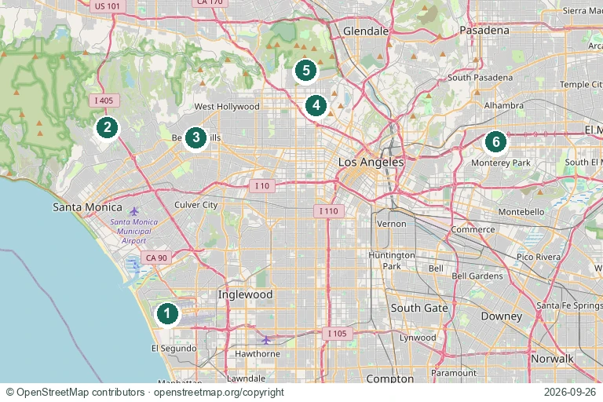
前半の経路を開く ↗
Day 1 · LAの位置関係
LAX Getty Center Beverly Hills（ALO・Erewhon周辺） Bounce：1160 N Vermont Ave Griffith Observatory Holiday Inn Monterey Park
後半の経路を開く ↗
番号は地点の位置です。画像をタップすると地図が開きます。
© OpenStreetMap contributors
10/1 Beijing → LAX → Getty → Beverly Hills → Bounce → Griffith → hotel 北京 → LAX → 盖蒂中心 → 比佛利山 → Bounce → 格里菲斯 → 酒店
12:00（北京） 北京首都空港T3から出発从北京首都机场T3出发 UA772。北京首都T3には09:00頃の到着を目標にする。LAXへの到着は同じ10/1の現地09:20。時差で時計上の順序が逆になります。UA772。计划09:00左右抵达北京首都机场T3；按洛杉矶当地时间，同日09:20抵达LAX。由于时差，表面上抵达时刻早于出发时刻。
09:20（LA） ロサンゼルス空港 LAX到着 入国審査・荷物受取・配車場所への移動を開始。
11:00–11:30 LAX → Getty CenterLAX → 盖蒂中心 空港を出る時間帯。12:00の入館に向け、降車場所には11:30–11:40頃着を目標 にする。公式のトラム移動目安15–20分に加え、待ち時間・荷物預けを見込む。配車時の到着予測で間に合わなければ、予約変更・取り直しを確認する。计划在此时段离开机场。为12:00入馆，目标11:30–11:40左右抵达下车点 。官网估计缆车交通需15–20分钟，另留排队与寄存行李时间。若叫车时预计无法赶上，核对改约或重新预约的办法。
12:00–14:00 Getty Center（2人分予約済み）盖蒂中心（已预约两人） 手元の2枚の入場券を再確認：10/1（木）12:00、無料。大きい荷物は館内入口のクロークへ預け、退出時に回収する。建築・景色・Central Garden・主要展示1–2か所・館内昼食。券は端末にオフライン保存し、一部ギャラリーの改修閉鎖を見込む。再次核对两张门票：10月1日（周四）12:00，免费。大件行李须寄存在馆内入口的衣帽寄存处，离馆时取回。参观建筑、景观、中央花园和1至2处主要展览，并在馆内午餐。门票离线保存在设备上，预留部分展厅因翻修关闭的可能。
14:00–14:30 Getty退出・荷物回収・下りトラム盖蒂离馆、取行李与下行电车 14:00頃に見学を切り上げ、クロークで荷物を回収して下りトラムへ。公式のトラム目安15–20分に加え、待ち時間と乗車場所への徒歩を見込み、14:30頃の配車乗車を目標にする。待ち時間が増えたらBeverly Hillsを短縮する。约14:00结束参观，取回寄存行李后乘下行电车。除官网电车体验参考15–20分钟外，还需考虑等候及走到上车点；目标约14:30乘网约车。等待较长时缩短比佛利山停留。
14:30–15:00 Getty → Beverly Hills 14:30頃にUber / Lyftへ乗り、15:00頃の到着を計画する。運転30分は計画値で、到着は交通次第。15:00を過ぎる予測ならALO・Erewhonを短縮し、15:50のBounceへの出発を優先する。计划约14:30乘Uber / Lyft、15:00左右抵达；30分钟车程是计划值，实际按交通调整。若预计15:00后到达，缩短ALO与Erewhon停留，优先保证15:50前往Bounce。
15:00–15:50 Beverly Hills: ALO + Erewhon Rodeo Drive / Pink Wallへは別移動しない。店内が狭ければ交代で入る。
15:50–16:30 Beverly Hills → Bounce 1160 N Vermont Aveの「Near East Hollywood」を予約し、ホテルの受付で予約確認QRコードを提示してスーツケースを預ける。预订1160 N Vermont Ave的「Near East Hollywood」寄存点，在酒店前台出示预订确认二维码并寄存行李箱。
16:40–17:15 Bounce → Griffith Observatory 往路はUber / Lyft。理想17:00–17:15、遅くとも17:30。
17:15–19:05 Griffith Observatory Hollywood Sign、市街景色、外観、短時間の館内展示、日没・夜景。プラネタリウムは今回は入れない。
19:05以降 路線バスDASHで下山 → Bounce 帰りは時間制約が緩いためDASHを優先。山麓から徒歩または短距離配車。
19:40–20:10 Bounceで荷物回収 公式掲載は木曜24時間営業。予約画面の受取予定時刻・最終料金を確認し、同じ受付で回収する。官网显示周四全天24小时营业；核对订单中的取件时间和最终价格，在同一前台取回行李。
20:40–21:20 Monterey Parkのホテルへ 道路状況込みの到着見込み。Holiday Inn & Suites Monterey Park へ向かう。
交通・Bounce・食事: 約$213–335 / 2人 標準: $250–290 ALO購入代: 別 Getty / Griffith: 無料
LAX→Getty $55–70 Getty→BH $22–35 BH→Bounce $23–35 Bounce→Griffith $14–25 DASH等 $1–10 Bounce→ホテル $40–65 Bounce $8–15 昼食 $35–55 Erewhon $15–25
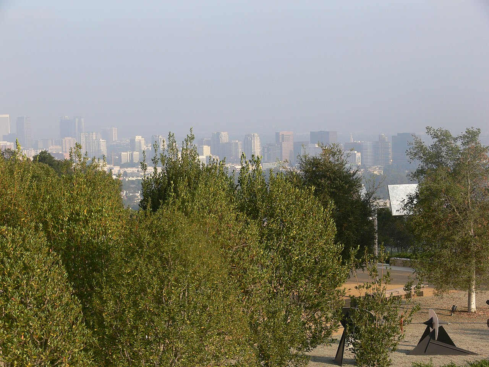
12:00–14:00 2人予約済み
Getty Center 10/1 12:00、2人分の入場券を9/25に再確認。 入場無料。公式FAQでは大きな荷物も持込み可能ですが、11 × 17 × 8インチ超は館内入口のクロークに預けます。券は非公開のまま端末へ保存。9月25日再次确认10月1日12:00两人门票。 免费入场。官网说明可携带大件行李，但超过11 × 17 × 8英寸须寄存于馆内入口。门票仅保存在个人设备上，不公开。
15:00–15:50 行程確定
Beverly Hills: ALO + Erewhon アパレル店ALOで服を確認し、食品店Erewhonでスムージーまたは飲み物。周辺街歩きは移動中だけ。在服装店ALO看衣服，在食品店Erewhon买冰沙或饮料；周边街景只在两店之间顺路看。
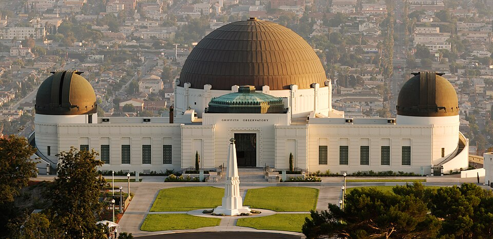
17:15–19:05 優先
Griffith Observatory 18:40 日没 。日没前の景色から夜景まで滞在。無料・予約不要。18:40 日落 。从日落前的景色看到夜景；免费且无需预约。
荷物の扱い：3候補行李处理：3个候选方案
基準案はBounce： 掲載名「Near East Hollywood」、1160 N Vermont Ave, Los Angeles, CA 90029 。公式掲載では木曜も24時間営業。事前に日時と荷物数を指定して予約し、受付で確認QRコードを提示して預け、夜に同じ場所で回収する。掲載価格は1個1日USD 4.25から で、最終料金・受取時刻は予約画面で確認。パスポート・貴重品・薬は持ち歩く。基准方案为Bounce： 网点名「Near East Hollywood」，地址1160 N Vermont Ave, Los Angeles, CA 90029 。官网显示周四全天24小时营业。提前选择日期、时间和行李数量完成预订，在前台出示确认二维码寄存，当晚在同一地点取回。标价为每件每天4.25美元起 ，最终价格和取件时间以订单为准；护照、贵重物品和药品随身携带。
LuggAgent： LAXで係員へ渡しMonterey Parkのホテルへ同日配送する案。事前予約とホテル側の受取同意が必要。Uber Courier： 当日アプリに表示され、荷物と受取先が条件に合う場合だけ候補にする。配送が確保できた場合のみBounceへの往復を外す。LuggAgent： 在LAX交给工作人员、当日送至蒙特利公园酒店的方案；须提前预订并取得酒店同意。Uber Courier： 仅在当天App显示可用，且行李和收件地点符合条件时考虑。只有落实配送后才取消Bounce往返。
宿泊 住宿 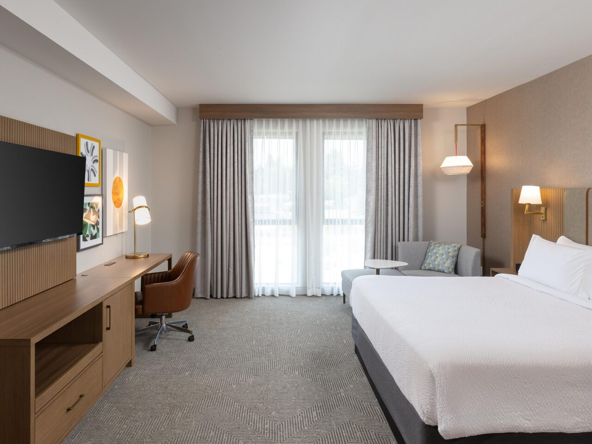
写真出典: IHG公式ギャラリー（客室・内観） 照片来源：IHG官方画廊（客房・室内） Holiday Inn & Suites Monterey Park – Los Angeles by IHG 400 N Atlantic Blvd 、Booking.comの9/25表示額CNY 1,050。予約は確定表示だが、支払状況・税等の最終内訳・取消条件は詳細画面で確認する。翌朝の乗車地点Courtyardとは別施設。Holiday Inn & Suites Monterey Park – Los Angeles by IHG 400 N Atlantic Blvd ，Booking.com于9月25日显示1,050元。预订显示已确认，但付款状态、税费最终明细及取消条件需在订单详情核对。与次晨上车的Courtyard不是同一家酒店。
Bounceの詳細地図を見る查看Bounce详细地图
Gettyトラム盖蒂缆车
小計：宿泊 CNY 1,050 ＋ 当日の交通・荷物預かり・食事 USD 213–335（概算）。航空券・夕食・買い物・追加税等は未計上。小计：住宿 CNY 1,050 ＋ 当天交通、行李寄存与餐饮 USD 213–335（估算）。未计机票、晚餐、购物及额外税费。
10/2 金曜日 / ツアー1日目：Los Angeles → 17-Mile Drive → San Jose 星期五 / 团程第1天：洛杉矶 → 17里湾 → 圣何塞
出団通知書（9/17発行）でCourtyard by Marriott Los Angeles Monterey Park、08:00乗車 を確認。07:40までの到着を目標にする。観光順と到着時刻は商品資料の参考で、当日のガイド案内に従う。9月17日出团通知书确认在Courtyard by Marriott Los Angeles Monterey Park于08:00上车 ；目标07:40前到达。景点顺序和抵达时间以商品资料为参考，实际按导游安排。
この日の要点当天要点
集合集合 Courtyard 555 N Atlantic Blvdへ07:40まで／08:00乗車07:40前到Courtyard，555 N Atlantic Blvd／08:00上车
荷物行李 全荷物を持って移動。前泊Holiday Innは400 N Atlantic Blvd带全部行李前往；前晚Holiday Inn地址为400 N Atlantic Blvd
現地払い现场付款 指定観光費USD 140＋本日のチップUSD 36（2人）指定景点费140美元＋本日两人小费36美元
食事・時刻餐饮与时间 食事は自費、当日の集合・停車時刻はガイド案内に従う餐饮自理，集合及停靠时刻按导游安排
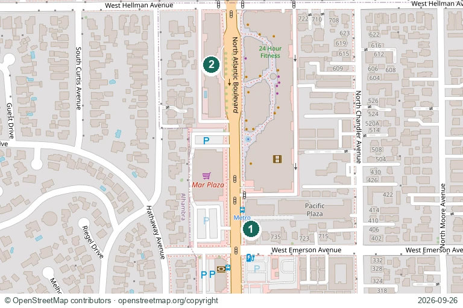
地図を開く ↗
Day 2 · 前泊ホテルと乗車地点
Holiday Inn：前泊、400 N Atlantic Blvd Courtyard：乗車、555 N Atlantic Blvd／07:40まで
番号は地点の位置です。画像をタップすると地図が開きます。
© OpenStreetMap contributors
10/2 Tour D1 / Los Angeles → 17-Mile Drive → San Jose 团程D1 / 洛杉矶 → 17里湾 → 圣何塞
07:40まで / 08:00 Courtyard Monterey Parkに集合 → 乗車在Courtyard Monterey Park集合、上车 集合は555 N Atlantic Blvd, Monterey Park, CA 91754 。通知書は08:00発・15分前到着を指定するため、余裕を見て07:40までに着く。宿泊先Holiday Inn & Suites（400 N Atlantic Blvd）とは別のホテル。朝食は自費。集合地址：555 N Atlantic Blvd, Monterey Park, CA 91754 。通知书规定08:00出发、提前15分钟到达；为留余量，目标07:40前到。前晚入住的Holiday Inn & Suites（400 N Atlantic Blvd）是另一家酒店；早餐自理。
12:30頃 17-Mile Drive・太平洋沿岸の景色17里湾与太平洋海岸景色 17-Mile Drive、Pebble Beach、Monterey Bayは外観・景観見学。California Highway 1は車窓。資料の観光枠は約1時間20分、昼食は自費。ゴルフや水族館入場を含む案内ではない。17里湾、圆石滩、蒙特雷湾为外观与景观游览；加州1号公路为车览。资料列游览约1小时20分，午餐自理，不表示含高尔夫或水族馆入场。
18:00頃 San Jose方面のホテルへ・夕食前往圣何塞方向酒店并晚餐 夕食は自費。宿泊は商品掲載のSheratonまたは同等クラス、参考到着時刻は18:00。晚餐自理。住宿为商品所列喜来登或同等级酒店，参考抵达时间18:00。
確定した乗車地点已确认上车地点 10/2 08:00 Courtyard by Marriott Los Angeles Monterey Park 07:40までに到着 （通知書の最低条件は07:45まで）。前泊のHoliday Inn & Suitesは400 N Atlantic Blvdにあり、別施設。10月2日08:00 Courtyard by Marriott Los Angeles Monterey Park 07:40前到达 （通知书最低要求07:45前到达）。前一晚入住的Holiday Inn & Suites在400 N Atlantic Blvd，是不同的酒店。
10/2–4 ツアー料金・参加条件・出発前チェック10/2–4 三日团费用、参加条件与出发前检查
資料：9/17発行の出団通知書と商品画面。通知書で10/2乗車地点・10/4降車地点・3日間の行程骨格と現地費用を確認した。ツアー本体代と支払状況は通知書に記載がない。観光の細かな順序・到着時刻は当日のガイド案内に従う。通知書をオフライン保存し、本人確認書類を持参する。依据9月17日出团通知书及商品页面。通知书确认10月2日上车点、10月4日下车点、三天的行程框架和当地费用；未列出团费金额及付款状态。景点具体顺序与抵达时间以当天导游安排为准。离线保存通知书并携带有效身份证件。
ツアー本体に含まれるもの团费包含 3日間のツアー車両・1人1席、普通話（中国語）のドライバー兼ガイド、2名1室のホテル2泊。掲載宿はSan Jose方面のSheratonとLa Casa Modestoで、同等クラスへ変更される場合がある。最大14名・他社客との混乗あり、行程途中でガイドや車両が変わる形式。少人数時は小型車を使用する場合がある。商品は買物立寄り0件と掲載。三天旅游用车、一人一座、当地普通话司机兼导游、标准两人一间的两晚酒店。所列酒店为圣何塞方向喜来登及La Casa Modesto，可能更换同等级酒店。最多14人，可与其他旅行社客人拼团，不同路段可能更换导游或车辆，人数少时可能使用小车。商品标明0购物。
別料金・含まれないもの团费不含 朝昼夕の全9食、毎日のチップ、指定観光費、任意の湾内クルーズ・追加市内観光、対象者の国立公園非居住者追加料。航空券、ビザ費用、ホテル保証金、超過荷物・預かり、個人消費、自由時間の交通も別。集合地点までと解散後のホテル移動はこのサイトで別枠管理する。全部9餐、每日小费、指定景点费、自愿海湾游船及深度游、适用旅客的国家公园非居民附加费。机票、签证费、酒店押金、超额或寄存行李、个人消费及自由活动交通另计。前往集合点及散团后前往酒店的交通在本站另列。
2人分の追加費用两人附加费用
項目项目 金額と計上方法金额与计入方式
ガイドへのチップ导游小费 USD 18 × 2人 × 3日 = USD 108 。通知書は現地での現金払いを指定。各日USD 36ずつ小計に反映。18美元 × 2人 × 3天 = 108美元 。通知书要求现场现金支付；每天小计各计36美元。必須の指定観光費：Yosemite＋17-Mile Drive必付景点费：优胜美地＋17里湾 USD 70 × 2人 = USD 140 。通知書は現地での現金払いを案内。3日共通として1回だけ計上し、支払済みの証憑があれば二重払いしない。70美元 × 2人 = 140美元 。通知书要求现场现金支付；三天只计一次，如已有付款凭证则避免重复支付。Yosemiteの非居住者追加料（条件付き）优胜美地非居民附加费（有条件） 16歳以上の米国非居住者で対象パスなしの場合、USD 100 × 2人 = USD 200 。通知書は現地払いを案内。10/4の条件付き小計に反映。16岁以上非美国居民且无适用年卡时，100美元 × 2人 = 200美元 。通知书要求现场支付；计入10月4日的条件性小计。 San Francisco追加市内観光（任意）旧金山深度游（自选） 通知書の参考価格はUSD 50 × 2人 = USD 100 。参加可否・内容と最終価格をガイドに確認。通知书参考价为50美元 × 2人 = 100美元 ；向导游确认活动内容及最终价格。 San Francisco湾内クルーズ（任意）旧金山湾游船（自选） 通知書の参考価格はUSD 39 × 2人 = USD 78 。便・所要時間と最終価格をガイドに確認。通知书参考价为39美元 × 2人 = 78美元 ；向导游确认班次、时长和最终价格。
3日間の必須追加費用は2人でUSD 248。非居住者追加料が2人とも必要ならUSD 448。三天必付附加费用两人合计248美元；若两人均需非居民附加费，则为448美元。 任意の2件も両方参加すると参考額はさらにUSD 178。ツアー本体代・9食・集合解散の交通は含まない。日別欄や下の費用一覧と二重に足さない。若两项自选活动都参加，参考金额再加178美元。不含团费、九餐及上下车交通；不要与每日及下方费用清单重复相加。
NPS公式（2026/9/25再確認）：非居住者追加料USD 100は16歳以上の米国非居住者に対し、商業ツアーでも適用。USD 250の非居住者向け年パスは、ツアーでは所持者と同じ同行グループの成人3人までの追加料をカバーする。年パス利用時も販売店のUSD 70指定観光費が自動免除されるとは限らない。2026年9月25日再次核对NPS官网：100美元非居民附加费也适用于参加商业团的16岁以上美国非居民。250美元的非居民年卡在旅游团内可覆盖持卡人及同行组中另外三位成年人；年卡不一定免除旅行社收取的70美元指定景点费。 NPS：商業ツアーと非居住者料金NPS：商业团与非居民费用
予約元へ確認すること向预订方确认
ツアー本体代と入金状況、USD 70指定観光費の事前払いの有無、任意の2件に参加しない場合の待機・再集合地点。核对团费与付款状态、70美元指定景点费是否已预付，以及不参加两项自费活动时的等候与重新集合地点。
10/4のUnion Station正面入口への到着時刻。通知書に時刻がなく、商品掲載の19:00–20:00は参考値のみ。翌朝07:00便に備え、降車後のLAXホテル移動を決める。确认10月4日抵达Union Station正门的时间；通知书未列时刻，商品页面19:00–20:00仅供参考。为次日07:00航班预先安排下车后前往LAX酒店的交通。
出発前日の夕方にガイド情報・最終ホテルを確認。出団通知書をオフライン保存し、当日は本人確認書類を持参。途中離団や順路の希望は事前相談。出发前一晚确认导游信息及最终酒店；离线保存出团通知书，当天携带有效身份证件。提前离团或路线要求须预先沟通。
取消・変更の最終規定。画像には「その他ツアー：7日前・違約金100%」の案内があるが、正式な違約条項や出行須知の詳細画面は未提供。実際の予約契約の適用条件・締切を確認し、この要約だけで取消可否を判断しない。取消与变更的最终条款。截图有“其他团行程前7天100%”的提示，但未展开正式违约条款与出行须知；核对实际订单适用条件和截止时间，不仅凭本摘要判断退改。
商品画面の一部には距離・所要時間と予定時刻が整合しない表示があるため、サイトでは主要行程と参考時刻のみ採用。天候・交通・閉園で順序や内容が調整される場合がある。商品页面部分距离、时长与时刻不一致，本站仅采用主要行程与参考时间；天气、交通或关闭可能导致顺序与内容调整。
ツアー掲載宿: Sheraton San Jose Silicon Valley（SHERATON, Milpitas）团程所列住宿：Sheraton San Jose Silicon Valley（SHERATON, Milpitas） 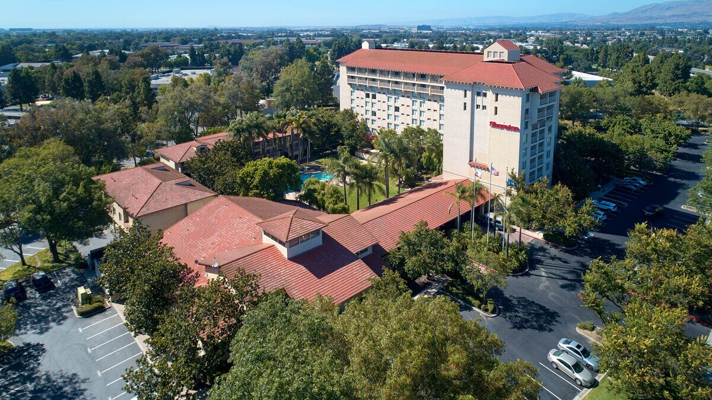
写真出典: Marriott公式ギャラリー（外観） 照片来源：Marriott官方画廊（外观） 出団通知書は「Sheraton Hotelまたは同等クラス」と記載。Sheraton San Jose Silicon Valleyなら住所は1801 Barber Ln, Milpitas, CA 95035 だが、通知書は正式な施設名・住所までは特定していない。1泊分はツアー本体代に含まれ、食事は自費。出团通知书写明“Sheraton Hotel或同级”。如果是Sheraton San Jose Silicon Valley，地址为1801 Barber Ln, Milpitas, CA 95035 ，但通知书未确认酒店全名及地址。一晚住宿包含在团费中，餐饮自理。
当日分：チップ USD 36（18 × 2人）＋3日共通の指定観光費 USD 140（2人分、ここに1回だけ計上）。合計 USD 176。ツアー本体代・食事・集合場所までの交通は金額未記録。宿泊はツアー本体代に含む。当天费用：小费36美元（18美元 × 2人）＋三天共用指定景点费140美元（两人，仅在此计一次），合计176美元。团费、餐饮及到集合点的交通金额未记录；住宿已包含在团费中。
10/3 土曜日 / ツアー2日目：San Jose → San Francisco → Modesto 星期六 / 团程第2天：圣何塞 → 旧金山 → 莫德斯托
サンフランシスコの主要景観を巡り、夕方にModestoへ移動する日。湾内クルーズと追加市内観光は任意・別料金として分け、基本行程に自動で追加しない。游览旧金山主要景观，傍晚前往莫德斯托。海湾游船与深度市区游为自愿自费项目，不自动加入基本行程。
この日の要点当天要点
出発出发 ガイド指定のホテル集合時刻を前夜に確認前夜确认导游指定的酒店集合时刻
荷物行李 ホテル移動日。集合前に部屋の荷物を回収更换酒店日，集合前取齐房间行李
現地払い现场付款 チップUSD 36（2人）＋食事／任意活動は別途两人小费36美元＋餐饮，自选活动另计
任意活動自选活动 クルーズ・市内深度観光は参加するものだけ選ぶ游船与市区深度游仅选实际参加项目
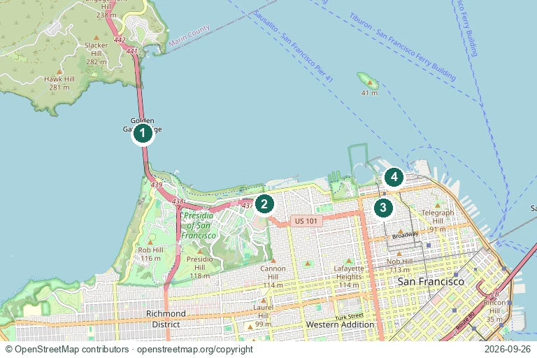
地図を開く ↗
Day 3 · San Francisco
Golden Gate Bridge Palace of Fine Arts Lombard Street（曲がりくねった区間） Fisherman’s Wharf
番号は地点の位置です。画像をタップすると地図が開きます。
© OpenStreetMap contributors
10/3 Tour D2 / San Francisco → Modesto 团程D2 / 旧金山 → 莫德斯托
07:00 / 08:00 朝食後、San Franciscoへ早餐后前往旧金山 資料では07:00朝食（自費）、08:00移動開始。各地の絶対到着時刻は固定せず、ガイドの集合案内に従う。资料列07:00早餐（自理）、08:00开始移动。各景点抵达时间不固定，以导游集合安排为准。
午前〜午後 Golden Gate Bridge → Palace of Fine Arts → Lombard Street金门大桥 → 艺术宫 → 九曲花街 Golden Gate Bridge 約45分 → Palace of Fine Arts 約30分 → Lombard Street 約45分。いずれも外観・景観中心の参考順序。金门大桥约45分钟 → 艺术宫约30分钟 → 九曲花街约45分钟。均以外观与景观为主，顺序仅供参考。
約2時間30分 Fisherman’s Wharf・昼食・自由時間渔人码头、午餐与自由时间 Fisherman’s Wharfで昼食は自費。湾内クルーズは任意で、通知書の参考価格はUSD 39/人（2人で78） 。運航と最終価格をガイドへ確認。渔人码头午餐自理。湾内游船自选，通知书参考价为每人39美元（两人78美元） ；班次和最终价格向导游确认。
任意・別料金 San Francisco追加市内観光旧金山深度游（自愿自费） St. Mary’s Cathedral → City Hall → Twin Peaks → Treasure Island通過の参考案。通知書の参考価格はUSD 50/人（2人で100） 。参加しない場合の待機・再集合場所を確認。参考路线为圣玛丽大教堂、市政厅、双子峰、途经金银岛。通知书参考价为每人50美元（两人100美元） ；不参加时确认等候及重新集合地点。
18:00 / 18:30 夕食 → La Casa Modestoへ晚餐 → La Casa Modesto 資料では18:00夕食（自費）、18:30ホテル。La Casa Modestoまたは同等クラスへ宿泊する。资料列18:00晚餐（自理）、18:30入住La Casa Modesto或同等级酒店。
ツアー掲載宿: La Casa Modesto, Ascend Hotel Collection团程所列住宿：La Casa Modesto, Ascend Hotel Collection 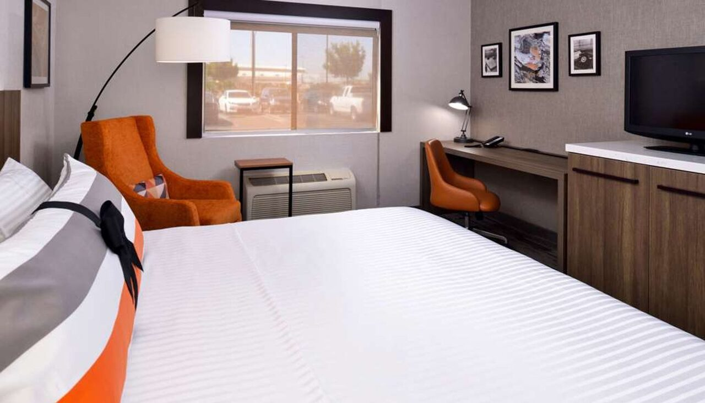
写真出典: HRSホテルギャラリー（館内・代表画像） 照片来源：HRS酒店画廊（室内・代表性照片） 商品資料の参考時刻は18:30。La Casa Modesto, Ascend Hotel Collection（1720 Sisk Rd, Modesto, CA 95350）の1泊分はツアー本体代に含まれる。同等クラス変更あり、最終施設・到着時刻は出団通知とガイドの案内に従う。3ダイヤ表記は携程の分類。朝食を含め食事は自費。商品资料参考入住时间18:30。La Casa Modesto, Ascend Hotel Collection（1720 Sisk Rd, Modesto, CA 95350）一晚住宿包含在团费内，可能更换同等级酒店；最终酒店与抵达时间以出团通知及导游安排为准。3钻为携程评级，包括早餐在内的餐饮自理。
ツアーの追加費用・参加条件を見る查看旅游团附加费用与参加条件
当日必須分：チップ USD 36（2人）。任意の湾内クルーズ USD 78、追加市内観光 USD 100 は参加する場合のみ加える。宿泊はツアー本体代に含み、食事は別。当天必付费用：两人小费36美元。自选湾内游船78美元和深度市区游100美元仅在参加时另计；住宿已含团费，餐饮另付。
10/4 日曜日 / ツアー3日目：Modesto → Yosemite → Los Angeles 星期日 / 团程第3天：莫德斯托 → 优胜美地 → 洛杉矶
Yosemite観光後、通知書指定のUnion Station（Alameda St側の正面入口） で降車する。通知書に到着時刻はなく、商品画面の19:00–20:00は参考にとどめる。翌朝07:00発の便に備えてLAX近くのホテルへ移動する。游览优胜美地后，在通知书指定的Union Station（Alameda St一侧正门） 下车。通知书未列抵达时间，商品页面19:00–20:00仅供参考；之后前往LAX附近酒店，为次日07:00航班做准备。
この日の要点当天要点
ツアー終了团程结束 Union Station降車、到着時刻は未確定Union Station下车，抵达时间未定
荷物・移動行李与交通 全荷物を回収し、Holiday Inn LAXへ配車等で移動取齐全部行李，叫车等前往Holiday Inn LAX
現地払い现场付款 チップUSD 36＋Yosemite追加料は条件によりUSD 200（2人）小费36美元；Yosemite两人附加费按条件可为200美元
翌朝の準備次晨准备 ホテル送迎便を確認。Day 5は04:15ロビー集合の計画确认酒店接驳班次；第5天暂定04:15大堂集合
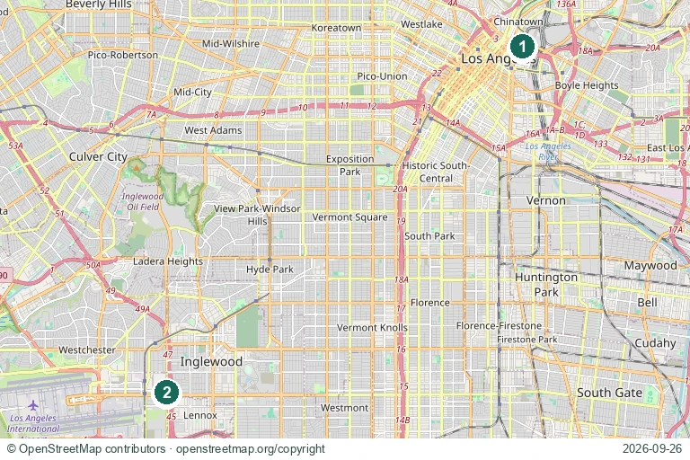
地図を開く ↗
Day 4 · 解散後の移動
Union Station（降車はAlameda St側） Holiday Inn LAX：9901 S La Cienega Blvd
番号は地点の位置です。画像をタップすると地図が開きます。
© OpenStreetMap contributors
10/4 Tour D3 / Yosemite → Los Angeles → LAX hotel 团程D3 / 优胜美地 → 洛杉矶 → LAX酒店
07:00 / 08:00 朝食・チェックアウト → Yosemiteへ早餐、退房 → 前往优胜美地 朝食は自費。08:00出発が資料上の参考時刻。荷物を積み、集合時刻はガイドの指示に従う。早餐自理。资料参考出发时间08:00；带齐行李，实际集合以导游通知为准。
昼ごろ Yosemite National Parkの景観観光优胜美地国家公园景观游览 Yosemite Valley、Half Dome、Yosemite Falls、El Capitanなどの景観が案内されている。登頂や全地点への立寄りは確約されていない。資料の入園時刻は12:00、滞在・昼食は当日調整。优胜美地山谷、半圆顶、优胜美地瀑布、酋长岩等为资料中的景观，不表示含登顶或保证逐一停靠。资料列12:00入园，停留与午餐以当天安排为准。
午後〜夕方 Los Angelesへ戻る・夕食返回洛杉矶并晚餐 昼食・夕食は自費。資料では夕食17:30の目安。天候・山火事・道路閉鎖でYosemiteへ入れない場合、Solvang・Santa Barbaraへ変更する可能性がある。午晚餐自理，资料参考晚餐时间17:30。遇恶劣天气、山火或封路无法进入优胜美地时，可能改去丹麦城Solvang与圣芭芭拉。
到着時刻未通知 Union Station正面入口で降車 → LAXホテルへ在Union Station正门下车 → 前往LAX酒店 800 N Alameda St, Los Angeles, CA 90012 。商品画面の19:00–20:00は参考値。実際の到着時刻はガイドへ確認し、降車後のホテル移動費・時間を別に確保する。800 N Alameda St, Los Angeles, CA 90012 。商品页面19:00–20:00只是参考；向导游确认实际抵达时间，并另行预留前往酒店的费用与时间。
夜 Holiday Inn LAXへチェックイン入住Holiday Inn LAX 翌10/5はAS801・07:00発。ホテル公式はLAXとの無料送迎を24時間運行と案内。乗車場所・運行間隔と手続き締切から逆算して翌朝の出発を決める。次日10/5乘AS801，07:00起飞。酒店官网说明往返LAX的免费接驳车全天24小时运营；核对乘车点和班次间隔，并按值机截止时间倒推次晨出发。
確定した降車地点・ホテルへの移動已确认下车点及前往酒店 通知書はUnion Station正面入口（Alameda St側、800 N Alameda St） を指定。到着時刻は未記載。降車後はHoliday Inn Los Angeles - LAX Airport（9901 S La Cienega Blvd）へ移動する。ホテルのLAX送迎は空港との往復用であり、Union Stationからホテルへの交通は別に手配する。通知书指定Union Station正门（Alameda St一侧，800 N Alameda St） 下车，未列抵达时间。随后前往Holiday Inn Los Angeles - LAX Airport（9901 S La Cienega Blvd）。酒店的LAX接驳车用于往返机场，从Union Station到酒店的交通需另行安排。
宿泊: Holiday Inn Los Angeles LAX Airport by IHG 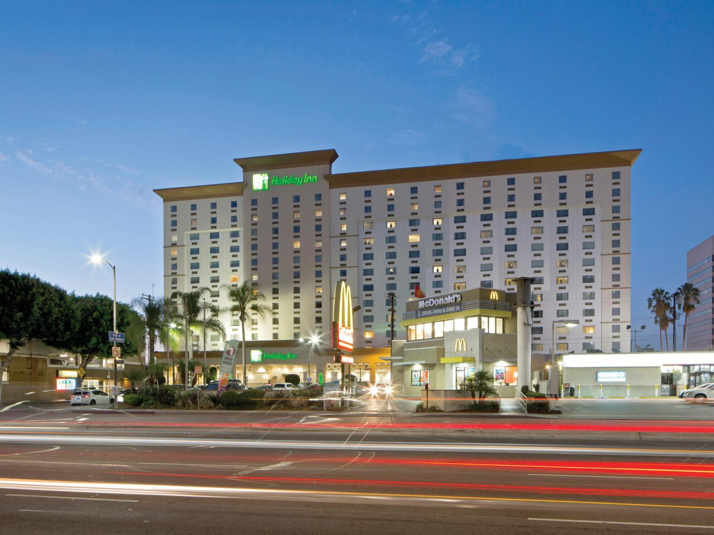
写真出典: IHG公式ギャラリー（外観） 照片来源：IHG官方画廊（外观） 10/4–10/5、9901 S La Cienega Blvd、Booking.comの9/25表示額CNY 1,030。予約は確定表示、支払状況・税等の内訳・取消条件は詳細画面で確認。ホテル公式はLAXとの無料送迎を24時間運行と案内。10月4日至5日，地址9901 S La Cienega Blvd，Booking.com于9月25日显示1,030元。预订显示已确认；付款状态、税费明细及取消条件需核对订单详情。酒店官网说明往返LAX的免费接驳车全天24小时运营。
ツアーの追加費用・参加条件を見る查看旅游团附加费用与参加条件
当日分：宿泊 CNY 1,030 ＋ チップ USD 36。2人とも16歳以上の米国非居住者で対象年パスを使わない場合、Yosemite追加料USD 200を加え、USD分は236。指定観光費は3日共通欄に別計上。食事・解散後のホテル移動費は未計上。当天费用：住宿 CNY 1,030 ＋ 小费 USD 36。若两人均为16岁以上非美国居民且无适用年卡，另加优胜美地附加费USD 200，美元部分为236。指定景点费在三日共同费用中单列；未计餐饮及散团后前往酒店的交通。
10/5 月曜日 / Honoluluで昼食 → Diamond Head 星期一 / 檀香山午餐 → 钻石山
HNL到着後にQueen Kapiolani Hotelへ荷物を預け、昼食後に高橋果実店（Henry's Place）へ立ち寄る予定です。Leonard'sは未定。予約済みのDiamond Headへ15:15頃に向かいます。抵达HNL后先在Queen Kapiolani Hotel寄存行李并用午餐，然后计划前往高桥果实店（Henry's Place）。Leonard's尚未决定；约15:15前往已预约的钻石山。
この日の要点当天要点
ホテル出発离开酒店 04:15ロビー集合・04:30乗車目安 → LAX T6 05:00目標参考04:15大堂集合、04:30上车 → 目标05:00到LAX T6
固定予約固定预约 AS801 07:00／Diamond Head 16:00入場目標、18:00園外退出AS801 07:00／钻石山目标16:00入场、18:00前离园
荷物行李 HNL到着後Queen Kapiolaniに寄り、預かりを確認抵达HNL后前往Queen Kapiolani，确认寄存
立寄り顺路地点 高橋果実店を予定。Leonard’sは未定、遅れたら省く计划高桥果实店；Leonard’s未定，延误则取消
10/5 Mon LAX → HNL
07:00 LAX T6 出発出发
09:58 HNL T1 到着抵达
AS801（Alaska Airlines、eチケット発券済み）。10/5 LAX T6 07:00発 → HNL T1 09:58着、所要約5時間58分。LAX T6には05:00頃を目標に到着し、ホテル送迎の乗車場所・所要時間、預け荷物とチェックイン締切を前夜に確認。AS801（阿拉斯加航空，电子客票已出票）。10月5日LAX T6 07:00出发 → HNL T1 09:58抵达，飞行约5小时58分。计划05:00左右抵达LAX T6；前一晚确认酒店接驳车乘车处与耗时、托运行李及值机截止时间。
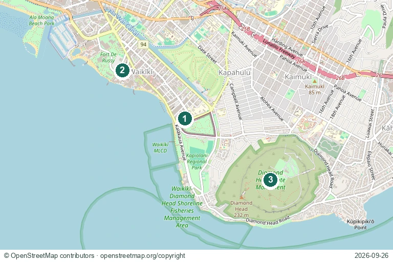
地図を開く ↗
Day 5 · Waikiki周辺
Queen Kapiolani Hotel 高橋果実店（Henry’s Place） Diamond Head State Monument
番号は地点の位置です。画像をタップすると地図が開きます。
© OpenStreetMap contributors
10/5 LAX → Honolulu / Waikiki LAX → 檀香山 / 威基基
04:15集合 / 04:30出発目安 Holiday Inn LAXをチェックアウト → T6へHoliday Inn LAX退房 → T6 05:00頃のLAX T6着が目標。 24時間の無料空港送迎を利用する計画。待ち時間と各ターミナル巡回を含め、04:15にロビー、04:30までの乗車を仮置き。前夜にフロントで出発便・T6までの所要時間を確認し、必要なら集合を早める。目标05:00左右抵达LAX T6。 计划乘酒店24小时免费机场接驳车；计入等候和巡回航站楼时间，暂定04:15在大堂集合、04:30前上车。前夜向前台确认班次和到T6的时间，必要时提前集合。
07:00 LAX出発 → HNL AS801、LAX T6 07:00発。05:00頃のターミナル到着を目標に、ホテルの送迎に乗る。AS801从LAX T6于07:00出发；以05:00左右抵达航站楼为目标，乘坐酒店接驳车。
09:58以降 HNL到着 → ホテルへ抵达HNL → 前往酒店 空港からQueen Kapiolani Hotelへ移動し、まず荷物を預ける。国内線の荷物受取・移動を含め、街歩き開始は11:00–11:30頃を基準にする。从机场前往Queen Kapiolani Hotel，先寄存行李。计入国内航班取行李和交通，街区步行以11:00–11:30左右开始为基准。
11:30–13:00 昼食：ガーリックシュリンプ / ステーキ丼 / ポケボウル午餐：蒜香虾 / 牛排盖饭 / 波奇饭 この3択をこの日の主食にする。ポケ丼は下記候補から当日の動線に合う1店だけを選ぶ。ワイキキから外れる店は、レンタカーまたは配車を使い、15:15頃のDiamond Head出発を崩さない場合だけ採用する。把这三个选项作为当天正餐。波奇饭只从下列候选中选择一家最符合当天动线的店；威基基以外的店仅在使用租车或叫车、且不影响约15:15前往钻石山时采用。
13:00–14:30 高橋果実店（Henry's Place）高桥果实店（Henry's Place） 234 Beach Walkの果物・ソルベを予定。営業時間・売切れを直前に確認し、昼食後に寄る。Diamond Headへの15:15頃の出発を優先する。Leonard's Bakery（933 Kapahulu Ave）は未定の追加候補。计划午餐后去234 Beach Walk买水果或雪葩，出行前核对营业时间及是否售罄；优先保证约15:15前往钻石山。Leonard's Bakery（933 Kapahulu Ave）仍只是未定的追加候选。
15:15頃 Diamond Headへ移動前往钻石山 16:00の入場を目標に向かう。遅れそうなら高橋果実店の滞在を短縮し、Leonard'sは見送る。予約の入場期限は16:30だが、遅れて入った場合は登山を短縮する。以16:00入场为目标前往。若可能延误，缩短高桥果实店停留并取消Leonard's。预约入场截止时间为16:30，但晚入场时须缩短登山。
16:00入場目標 Diamond Head（入場予約済み）钻石山（已预约入场） 10/5 16:00枠。16:00の入場を目標とし、入場期限は16:30。 徒歩往復は公式目安の90–120分 を見込む。18:00までに園外へ退出 するため、17:00を下山開始の計画目安にする。入場が遅れた場合は山頂にこだわらず、散策を短縮するか途中で引き返す。予約控えは入場料$10＋手数料$1.27＝合計$11.27。駐車予約は控えから確認できないため、車で行くなら別途確認する。10/5 16:00时段，以16:00入场为目标，入场截止时间为16:30。 按官方建议预留徒步往返90–120分钟 。为确保18:00前离开园区 ，暂以17:00开始下山为计划参考；若入场较晚，不强求登顶，缩短散步或中途折返。凭证显示入场费10美元＋手续费1.27美元＝合计11.27美元；凭证无法确认停车预约，驾车前往时须另行核对。
駐車（車で行く場合だけ）
Day 5のレンタカーは予約されていません （Oahuの受取は10/7）。Diamond Headを車で訪れる場合、非居住者は駐車＋入場の予約枠が必要、駐車USD 10/台 。現在のUSD 11.27の控えは入場のみを確認できるため、予約元で駐車枠と既存入場予約の扱いを確認します。車を手配した場合だけ、ホテル・高橋果実店・選んだ昼食先の駐車も追加確認。配車で回る場合は不要です。第5天未预订租车 （瓦胡岛10/7才取车）。若驾车去Diamond Head，非居民需预约停车＋入场时段，停车每车10美元 。现有11.27美元凭证只能确认入场，须向预约方核对停车时段及已有入场预约如何处理。仅在另行安排汽车时，才需补查酒店、高桥果实店及所选午餐店停车；叫车前往则无需停车安排。
18:00以降 軽い夕食・休息简便晚餐与休息 主食は昼に済ませる。下山後は体調と空腹に合わせて軽く食べ、翌朝便に備えて早めに休む。正餐已安排在午间；下山后按体力和饥饿程度简单用餐，并为次日早班机提早休息。
ポケ丼候補：1店だけ選ぶ波奇饭候选：只选一家 Komedokoro M's — 438 Hobron Ln #107。Hilton Hawaiian Village寄りの西ワイキキにあり、早めに閉まるため11:30の昼食候補。Henry's Place方面と組み合わせる場合に向く。営業時間と売切れを当日確認。Komedokoro M's 位于438 Hobron Ln #107，靠近Hilton Hawaiian Village一侧的西威基基。关门较早，适合作为11:30午餐；前往Henry's Place方向时较顺路。当天确认营业时间及是否售罄。Ohana Poke House — 1960 Kapiolani Blvd #212D、McCully Shopping Center 2階。施設公式は月曜11:00–19:00を掲載。ワイキキ西側へ寄る案で使う。Ohana Poke House 位于1960 Kapiolani Blvd #212D、McCully Shopping Center二楼。商场官网列周一11:00–19:00；适合前往威基基西侧的方案。Off the Hook Poke Market — 2908 E Manoa Rd、Starbucks隣。公式は月曜10:00–18:00を掲載。ワイキキから外れるためレンタカーまたは配車で寄る案。Off the Hook Poke Market 位于2908 E Manoa Rd、Starbucks旁。官网列周一10:00–18:00；不在威基基动线上，适合租车或叫车前往。Poke+Bap — 1126 Fort Street Mall、Downtown Honolulu。現在の店舗情報は月曜9:00–18:00だが、Diamond Headとは逆方向なのでDowntownへ行く場合だけ候補にする。営業時間は直前確認。Poke+Bap 位于1126 Fort Street Mall、檀香山市中心。当前店铺信息列周一9:00–18:00，但与钻石山方向相反，仅在前往Downtown时考虑；临近出发再确认营业时间。K.Bay Bros Too — 4510 Salt Lake Blvd。Pearl Harborに近いため10/5ではなく10/8の昼食候補。営業時間は直前確認。K.Bay Bros Too 位于4510 Salt Lake Blvd，靠近Pearl Harbor，因此放在10/8而不是10/5的午餐候选；临近出发再确认营业时间。ホテル・立ち寄り・確認リンク酒店・顺路地点・确认链接 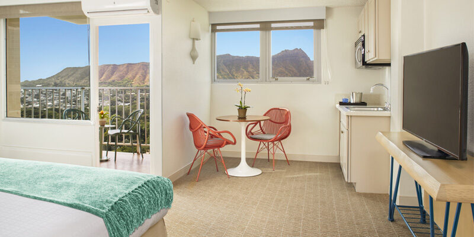
写真出典: Queen Kapiolani公式ギャラリー 照片来源：Queen Kapiolani官方画廊 Queen Kapiolani Hotel （10/5–10/6、CNY 1,303、取消しても返金なし）。ホテルへ荷物を預け、昼食を先に取り、高橋果実店（Henry's Place）へ立ち寄ってからDiamond Headへ向かう。Leonard'sは未定。Queen Kapiolani Hotel（10/5–10/6，1,303元，取消后不退款）。寄存行李后先吃午餐，前往高桥果实店（Henry's Place）后再去钻石山；Leonard's尚未决定。
LAXホテル送迎LAX酒店接驳
小計：宿泊 CNY 1,303 ＋ Diamond Head USD 11.27（入場$10＋手数料$1.27）。航空券・空港移動・食事・駐車は未計上。小计：住宿1,303元＋钻石山11.27美元（入场10美元＋手续费1.27美元）。未计机票、机场交通、餐饮及停车。
10/6 火曜日 / Maui・Haleakalā National Park 星期二 / 茂宜岛・哈雷阿卡拉国家公园
ホノルル空港（HNL）からマウイ島のカフルイ空港（OGG）へ移動し、レンタカー受取後はHaleakalā National ParkのSummit Districtをこの日の主目的にします。通常入園用のPrivate Vehicle Passは予約済みです。昼間に山頂方面を訪れ、暗くなる前の下山とKiheiのKohea Kai Hotel Mauiへの移動を優先します。从檀香山机场（HNL）飞往茂宜岛卡胡卢伊机场（OGG），取车后以哈雷阿卡拉国家公园Summit District为当天主要目的地。普通入园所需的Private Vehicle Pass已预订。白天游览山顶区域，优先在天黑前下山并前往Kihei的Kohea Kai Hotel Maui。
この日の要点当天要点
ホテル出発离开酒店 05:00集合・05:15出発目安 → HNL T2 06:00目標参考05:00集合、05:15出发 → 目标06:00到HNL T2
フライト・取車航班与取车 WN1978 08:00→08:50／Avis OGG 09:00予約、受取は後になる見込みWN1978 08:00→08:50／Avis OGG预约09:00，实际预计稍晚
山頂・帰路山顶与返程 13:15山頂着 → 15:15発 → 17:45ホテル着を計画暂按13:15到山顶 → 15:15离开 → 17:45到酒店
通信・補給通信与补给 地図を事前DL、Pukalaniまでに燃料・水・食事。遅れたら山頂滞在を短縮提前下载地图，在Pukalani或之前备好燃油、水和食物；延误则缩短山顶停留 10/6 Tue WN1978 / Southwest Airlines
08:00 HNL T2 ホノルル発檀香山出发
08:50 OGG マウイ着抵达茂宜岛
2人分のeチケット発券済み。飛行約50分。HNL T2には06:00頃を目標に到着し、預け荷物とチェックイン締切を航空会社で確認。OGG到着後は荷物を受け取り、予約済みレンタカーの受取場所へ移動。两人电子客票已出票，飞行约50分钟。计划06:00左右抵达HNL T2；向航司核对托运行李和值机截止时间。抵达OGG取行李后，前往已预订的租车取车点。
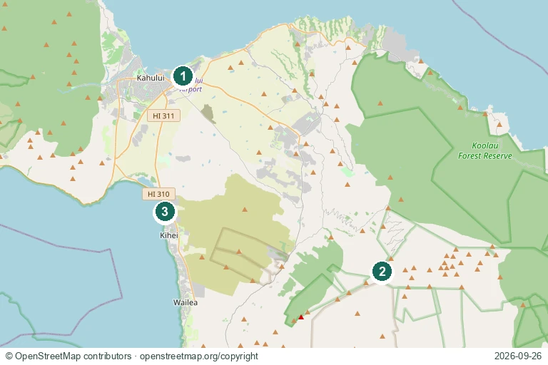
地図を開く ↗
Day 6 · Mauiの位置関係
OGGレンタカー施設：Avis受取・返却 Haleakalā Visitor Center（Summit District） Kohea Kai Hotel Maui
番号は地点の位置です。画像をタップすると地図が開きます。
© OpenStreetMap contributors
10/6 Honolulu → Maui / rental car 檀香山 → 茂宜岛 / 租车
05:00集合 / 05:15出発目安 Queen Kapiolaniを出発 → HNL T2离开Queen Kapiolani → HNL T2 06:00頃のHNL T2着が目標。 ホテル直営の空港送迎はないため、前夜にタクシー・配車または予約送迎を手配する。運転30–45分を計画値とし、05:00ロビー集合、05:15出発を仮置き。予約送迎の集合時刻が早ければそちらに従う。目标06:00左右抵达HNL T2。 酒店不提供自营机场接送；前夜安排出租车、网约车或预订接送。暂按30–45分钟车程规划，05:00在大堂集合、05:15出发；若接送公司要求更早集合，则按其安排。
08:00 HNL出発 → OGG eチケット：WN1978、10/6 HNL T2 08:00発 → OGG 08:50着。OGG側のターミナル表示・手荷物条件は出発前に確認。电子客票：WN1978，10月6日HNL T2 08:00出发 → OGG 08:50抵达。出发前核对OGG到达航站楼与行李规定。
08:50–10:15目安 OGG到着・荷物受取・Avis取車抵达OGG、取行李及Avis取车 09:00は予約上の受取時刻。荷物受取、無料トラム、契約確認を含め、10:15頃の出発を仮置きする。09:00を過ぎる受取になることを予約元へ事前確認。遅れたら昼食と山頂滞在を短縮する。09:00是订单上的取车时刻。计入取行李、免费电车与合同确认，暂按10:15左右离开租车设施规划；提前向预订方确认晚于09:00取车。若延误，缩短午餐与山顶停留。
駐車：OGG Avis
101 Mayor Elmer F Cravalho Way。受取後は自分の契約車両へ。翌朝はRental Car Return の標識で返却レーンへ入り、一般の空港駐車場には停めない。06:30返却に向け、早朝の入口・鍵の扱いを受取時に確認。地址101 Mayor Elmer F Cravalho Way。取车后前往合同指定车辆；次晨沿Rental Car Return 标志进入还车车道，不停普通机场停车场。为06:30还车，取车时确认清晨入口与钥匙交接。
10:15–13:15目安 補給・昼食 → Summit Districtへ补给、午餐 → Summit District カフルイから山頂までの運転はNPS目安で約2時間30分。Pukalaniまでに給油・水・持ち帰り昼食を確保し、短い食事休憩30分を含む計約3時間を仮置き。天候・道路・駐車を確認し、山頂到着13:15頃を目標にする。NPS估计从卡胡卢伊到山顶车程约2小时30分钟。在Pukalani或之前加油并备好水与外带午餐，另留30分钟短餐，暂按合计约3小时规划，目标13:15左右到山顶；当天确认天气、道路和停车状况。
上山前・選択肢 昼食は当日選ぶ（未決定）午餐当天选择（未定） Pukalani Superetteの持ち帰りを標準の時間計算に使う。Kula Bistroの店内食も候補として残し、待ち時間が増える場合は山頂滞在を短くする。店は確定しない。时间规划按Pukalani Superette外带午餐估算；保留Kula Bistro堂食候选。如排队或用餐较久，缩短山顶停留；餐厅尚未确定。
駐車：Pukalani Superette / Kula Bistro
昼食候補。 Pukalani（15 Makawao Ave）は、店に指定駐車区画・料金を確認して短時間の買い物に使う。入口と駐車条件は未確認。Kula Bistro（4566 Lower Kula Rd）は店舗専用駐車場あり 、料金の公式記載は未確認。満車や食事待ちが長い場合は着席案を見送り、山頂到着の余裕を保つ。午餐候选。 Pukalani（15 Makawao Ave）须向店员确认指定车位与收费，短时购物；入口及停车条件尚未确认。Kula Bistro（4566 Lower Kula Rd）有专用停车场 ，未找到官方收费说明。满位或用餐排队过长时，放弃堂食方案，保留上山时间。
13:15–15:15目安 Summit District（標準2時間）Summit District（标准2小时） 山頂展望・Visitor Center・短い散策を約2時間。12:15までに到着できた場合だけ最大3時間にする。山頂を15:15頃に出発 し、帰路を明るいうちに走る計画。到着が14:00以降なら15:15頃の出発に合わせて見学を短縮し、長いハイキングは入れない。山顶观景、Visitor Center与短距离散步按约2小时；只有12:15前到达时才延长至3小时。计划15:15左右离开山顶 ，尽量在天亮时段行驶返程。若14:00后才到达，为15:15左右出发而缩短参观，不安排长途徒步。
駐車：Haleakalā Summit
まずHaleakalā Visitor Center（標高9,740 ft）の駐車場 へ。低い位置にあるPark Headquartersと取り違えない。余裕があればPuʻuʻUlaʻula / Red Hill（10,023 ft）の別駐車場 へ移動する。入園パスUSD 30は支払済みだが、駐車枠を確保する予約ではない。駐車追加料の公式記載は未確認。満車・閉鎖時は係員の案内に従い、15:15頃の下山を遅らせない。先前往海拔9,740 ft的Haleakalā Visitor Center停车场 ，不要误去较低处的Park Headquarters。有时间可再开到PuʻuʻUlaʻula / Red Hill（10,023 ft）的另一个停车场 。30美元入园通行证已付款，但并非车位预约；未找到另收停车费的官方说明。满位或关闭时听从工作人员指引，不推迟约15:15下山。
Daytime 入園パス予約済み入园通行证已预订 Recreation.gov控え：Private Vehicle Pass 1枚、10/6開始・10/8まで有効、合計USD 30。車両1台と同乗者の通常入園をカバーする。3:00–7:00のサンライズ予約は含まれないため、今回は08:50 OGG着後の昼間入園とする。控えを印刷または端末へ保存して持参する。Recreation.gov凭证：1张Private Vehicle Pass，10月6日起至10月8日有效，合计30美元；涵盖一辆车及车内乘员的普通入园。该票不包含3:00–7:00的日出预约，因此本次安排在08:50抵达OGG后的白天入园。请打印凭证或保存至设备并随身携带。
15:15–17:45目安 下山 → Kohea Kai Maui・駐車・チェックイン下山 → Kohea Kai Maui、停车与入住 下山からKiheiのホテルまで約2時間30分を計画値 として確保する（実測ではなく、道路・天候で変動）。17:45頃の到着が目標。チェックイン後に夕食へ。翌朝のOGG返却に備えて給油を確認する。从山顶下山到Kihei酒店暂留约2小时30分钟作为计划值 ，并非实测，随道路与天气变化。目标17:45左右抵达；入住后再用晚餐，确认次晨OGG还车所需油量。
駐車：Kohea Kai Hotel Maui
551 S Kihei Rd。ホテル公式は無料駐車 を案内。フロントで宿泊者の指定区画を確認する。翌朝05:30出発なので、出庫経路・ゲートの有無と早朝チェックアウトを前夜に確認。地址551 S Kihei Rd。酒店官网列免费停车 ；向前台确认住客指定车位。次晨05:30出发，前夜确认驶出路线、是否有闸门及清晨退房方式。
ホテル到着後 夕食候補：Nalu’s / Coconut’s（未決定）晚餐候选：Nalu’s / Coconut’s（未定） 夕食はNalu’sまたはCoconut’sを参考に当日1店を選ぶ。店はまだ確定しない。翌朝のOGG返却に備えて給油を確認する。晚餐当天参考Nalu’s或Coconut’s选择一家，餐厅尚未确定；确认次晨OGG还车所需油量。
駐車：Nalu’s / Coconut’s
Azeka Shopping Centerの無料駐車場 を使う。Nalu’sはMakai（海側）1280 S Kihei Rd 、Coconut’sはMauka（山側）1279 S Kihei Rd 。行く店の側に停め、道路を横断するなら横断場所を確認。店舗利用の区画として使い、ホテルの夜間駐車の代わりにしない。使用Azeka Shopping Center免费停车场 。Nalu’s在Makai（海侧）1280 S Kihei Rd ，Coconut’s在Mauka（山侧）1279 S Kihei Rd 。尽量停餐厅同侧，过马路时确认安全通行处；只作店铺消费停车，不代替酒店过夜停车。
昼食・夕食の参考候補（予約先は未決定）午晚餐参考候选（尚未决定） 昼食：Pukalani Superette （15 Makawao Ave）。惣菜を持ち帰って上山前に食べる案。公式は火曜05:30–19:00。午餐：Pukalani Superette （15 Makawao Ave）；可外带熟食，在上山前用餐。官网列周二05:30–19:00。昼食：Kula Bistro （4566 Lower Kula Rd）。着席で食べる案。公式は火曜の昼食11:00–20:00、予約なしの順番待ち。午餐：Kula Bistro （4566 Lower Kula Rd）；堂食候选。官网列周二11:00–20:00供应午晚餐，仅现场排队。夕食：Nalu’s South Shore Grill （1280 S Kihei Rd）。公式は毎日08:00–22:00、厨房は21:00まで。晚餐：Nalu’s South Shore Grill （1280 S Kihei Rd）；官网列每天08:00–22:00，厨房21:00结束。夕食：Coconut’s Fish Cafe・Azeka店 （1279 S Kihei Rd）。公式は毎日11:00–21:00。晚餐：Coconut’s Fish Cafe Azeka店 （1279 S Kihei Rd）；官网列每天11:00–21:00。レンタカー・通信の注意租车与网络注意 Maui：Avis予約済み。 10/6 09:00受取 → 10/7 06:30返却、いずれもOGGの101 Mayor Elmer F Cravalho Way。Toyota Corollaまたは同等クラス（ICAR、AT、5席）、走行距離無制限。控えはオンライン前払いCNY 381 を表示するが、カード引落しは未照合。主運転者以外は契約に追加されるまで運転しない。車両の現況、燃料規定、免許証・国際運転許可証等の要件を窓口で確認する。無料取消は10/6 09:00より前までで、その後の取消料表示はCNY 324。到着が遅れる場合は予約元かAvisへ早めに連絡する。茂宜岛Avis已预订。 10月6日09:00取车、10月7日06:30还车，地址均为OGG的101 Mayor Elmer F Cravalho Way。Toyota Corolla或同级（ICAR、自动挡、5座），不限里程。凭证显示线上预付381元 ，银行卡实际扣款尚未核对。除主驾驶员外，其他人须先在合同中登记才能驾车；到店确认车况、燃油规定、驾照及国际驾照等要求。10月6日09:00前可免费取消，此后凭证列取消费324元；航班延误时及时联系预订平台或Avis。
控えに記載されたOGGの手順： 予約元はTrip.com。Avis営業所の記載時間は06:00–23:00。手荷物受取後は無料トラムでレンタカー施設へ行き、契約の車両クラスがICARか確認する。翌朝は「Rental Car Return」の標識で同施設に入り、06:30の返却時に鍵の受渡し・車両状態・最終請求を確認する。凭证上的OGG取还车步骤： 预订平台为Trip.com。Avis门店标示营业时间为06:00至23:00。取行李后乘免费电车到租车中心，核对合同车型代码是否为ICAR。次晨沿“Rental Car Return”标志进入同一中心，按06:30的预约还车时间核对钥匙交接、车况及最终费用。
Haleakalāの地図と帰路を事前ダウンロード。 公園内は携帯電波が不安定で公共Wi-Fiもありません。山上は燃料・飲食物を買えないためPukalaniまでに補給し、道路閉鎖と天候を当日確認。提前下载哈雷阿卡拉地图与返程路线。 园内手机信号不稳定，也没有公共Wi-Fi；山上不能购买燃油或食物，请在Pukalani之前补给，并在当天确认道路关闭与天气。
Haleakalā確定予定と宿泊哈雷阿卡拉确定行程与住宿 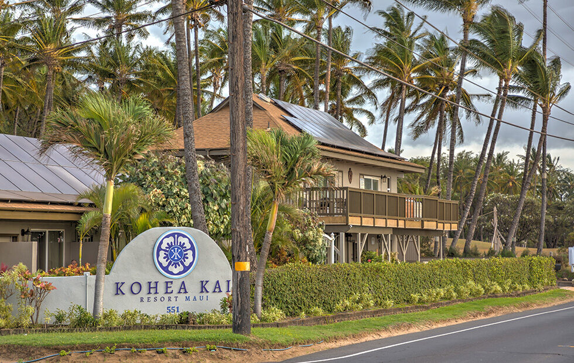
写真出典: Kohea Kai公式ギャラリー（外観） 照片来源：Kohea Kai官方画廊（外观） Haleakalā National Parkは10/6の確定目的地。 Private Vehicle PassはSummit DistrictとKīpahulu Districtの通常入園に使えるが、今回は移動時間を抑えてSummit Districtに絞る。山頂は海面付近より大幅に寒く、園内に食事・燃料の販売はないため、防寒着、水、軽食、満タンに近い燃料を準備する。悪天候や道路閉鎖時だけPāʻia・Kihei方面へ切り替える。哈雷阿卡拉国家公园是10月6日的确定目的地。 Private Vehicle Pass可用于Summit District及Kīpahulu District的普通入园；本次为控制移动时间，仅前往Summit District。山顶明显比海平面附近寒冷，园内不售餐食或燃油，因此需准备保暖衣物、饮水、简餐，并尽量加满油。仅在恶劣天气或道路关闭时改去Pāʻia、Kihei方向。
この日の別案・調整条件を見る查看当天备选方案与调整条件
Kohea Kai Hotel Maui：10/6–10/7、Kihei泊。予約画面の提携販売プランでCNY 1,525。取消条件は予約元で確認。ホテル公式は無料駐車を案内。Kohea Kai Hotel Maui：10/6–10/7住在Kihei，预订页面的合作伙伴优惠为CNY 1,525。取消条件向预订方确认；酒店官网列免费停车。
Queen Kapiolani送迎案内Queen Kapiolani交通指南
記載額：宿泊 CNY 1,525 ＋ Avisレンタカー CNY 381（前払い表示、引落し未照合）＋ Haleakalā入園パス USD 30（支払い確認済み）。Kohea KaiとAzekaの駐車は無料。燃料・食事・その他の駐車条件は未定、航空券は全体欄に計上済み。已记录住宿1,525元、Avis租车381元（显示线上预付，扣款待核对）及已确认付款的哈雷阿卡拉门票30美元。Kohea Kai与Azeka停车免费；燃油、餐饮及其他停车条件待定，机票已计入全程费用。
10/7 水曜日 / Maui → Bishop Museum → 張学良夫妻の墓所 → 東側 → Waikiki 星期三 / 茂宜岛 → Bishop Museum → 张学良与赵一荻之墓 → 东海岸 → 威基基
早朝にKohea Kaiを出てOGGで車を返却し、AS1045でHNLへ。Bishop Museumに約2–3時間滞在後、Ho‘omaluhia Botanical Gardenと張学良・趙一荻の墓所へ。時間が残れば東側の海岸にも立ち寄り、17:00頃にSheraton Waikikiへ戻る目標です。博物館に3時間かけた場合は海岸を省きます。清晨离开Kohea Kai，在OGG还车后搭AS1045飞往HNL。参观Bishop Museum约2至3小时，再前往Hoʻomaluhia植物园及张学良与赵一荻之墓。有余裕时再短暂停留东侧海滩，目标17:00左右回到Sheraton Waikiki；如博物馆停留3小时则取消海滩。
この日の要点当天要点
朝の出発・返車早间出发与还车 05:30ホテル発目標 → Avis 06:10着・06:30返却完了 → OGGターミナル06:40目標目标05:30离开酒店 → 06:10到Avis、06:30完成还车 → 06:40到OGG航站楼
博物館・午後博物馆与下午 11:15–13:15 Bishop → 植物園14:30発 → 墓所15:10発の計画暂按11:15–13:15 Bishop → 14:30离开植物园 → 15:10离开墓址
荷物・運転行李与驾驶 BishopでUSD 5/点の預かり、回収後は交代見学。追加運転者は窓口登録Bishop寄存每件5美元，取回后轮流参观；额外驾驶员先在柜台登记
帰着・駐車返回与停车 17:00頃Sheraton目標、セルフUSD 55/日。3時間見学・遅延時は海岸を省く目标17:00左右回Sheraton，自助停车55美元/日；参观3小时或延误则取消海滩 10/7 Wed AS1045 / Alaska Airlines
08:41 OGG マウイ発茂宜岛出发
09:20 HNL T1 ホノルル着抵达檀香山
2人分のeチケット発券済み。飛行約39分。以前の変更表示は確認済みで問題なし。出発前は通常の運航状況・手荷物条件だけ再確認。两人电子客票已出票，飞行约39分钟。此前“航班有调整”的提示已确认无问题；出发前仅按常规核对航班动态及行李规定。
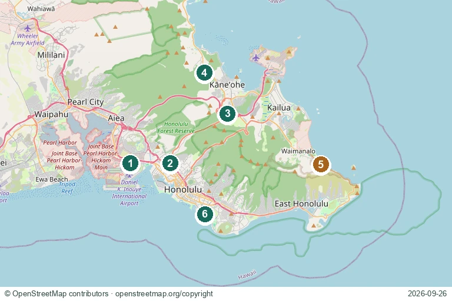
地図を開く ↗
Day 7 · 博物館・植物園・墓所・海岸
HNL CONRAC：Avis受取 Bishop Museum Ho‘omaluhia Botanical Garden 張学良・趙一荻の墓所 Waimānalo Beach Park（時間が残れば） Sheraton Waikiki
番号は地点の位置です。画像をタップすると地図が開きます。 茶色は時間や当日の状況で選ぶ候補。
© OpenStreetMap contributors
10/7 Maui → Bishop Museum → Chang tomb → Oahu east shore 茂宜岛 → Bishop Museum → 张学良墓 → 瓦胡岛东海岸
05:30目標 Kohea Kai Hotel Mauiを出発从Kohea Kai Hotel Maui出发 05:30ホテル出発 → 運転20–30分＋給油10分 → 06:00–06:10 Avis着の計画。06:10までに返却手続きを始め、15–20分を見込んで06:30までの返却完了を目標にする。返却先は101 Mayor Elmer F Cravalho Way、予約の06:30は変更しない。前夜に給油できれば朝の余裕になる。计划05:30离开酒店，开车20–30分钟加上加油10分钟，06:00–06:10到Avis。06:10前开始手续，预留15–20分钟，以06:30前完成还车为目标。地址101 Mayor Elmer F Cravalho Way，预订的06:30还车时间不变；前晚加油可增加清晨余量。
06:10–06:30手続き目標 OGGのAvisで返却・06:30までに完了在OGG还车、06:30前完成 Avisは06:00営業開始。車両・鍵・燃料規定と返却記録を確認し、06:30までに返却を完了する計画。続いて無料トラム等の移動5–10分を見込み、06:40までのターミナル到着を目標にする。いずれも計画値で、前夜に返却・早朝トラムの手順を確認する。Avis于06:00开始营业。核对车辆、钥匙、燃油要求及还车记录，计划06:30前完成手续。随后预留5–10分钟乘免费电车等前往航站楼，目标06:40前抵达。均为计划值，前晚确认还车及清晨电车流程。
08:41 → 09:20 AS1045 OGG → HNL T1 チェックイン・保安検査・搭乗口への移動を考え、06:40頃のターミナル着を目標にする。考虑值机、安检与前往登机口，以06:40左右抵达航站楼为目标。
09:20–10:45目安 HNLで荷物受取・予約済みレンタカー受取HNL取行李及领取已预订车辆 Avisの予約はHNL・300 Rodgers Blvdで09:30受取。T1到着後、荷物を受け取り、レンタカー送迎バスでCONRAC 2階のAvisへ。飛行機は09:20着なので実際の受取は09:30より後になる見込み。遅れた場合は海岸を省く。Avis凭证列HNL的300 Rodgers Blvd于09:30取车。T1抵达后取行李，乘租车接驳巴士到CONRAC二楼Avis。航班09:20抵达，实际取车预计晚于09:30；如延迟则取消海滩停留。
10:45–11:15目安 CONRAC → Bishop Museum・駐車・受付CONRAC → Bishop Museum、停车与入馆 運転20分＋駐車・受付10分を仮置きした30分の移動枠 。到着後は1525 Bernice Stの駐車場へ入り、必要な荷物を受付へ預ける。実際の交通でずれたら海岸を省く。暂按开车20分钟＋停车及受付10分钟，预留30分钟交通时段 。到1525 Bernice St停车，并在受付寄存需要保管的行李；若因交通延后，取消海滩。
駐車：Bishop Museum
1525 Bernice St。Bernice St側から入り、Visitor Parking 1または2へ （Staff Parkingは使わない）。公式駐車図ではKapālama Ave側は一方通行の出口専用 。非居住者はUSD 16/台 、先着順・現地標識の手順で支払う。駐車と入場の時間は10:45–11:15の移動枠に含める。地址1525 Bernice St。从Bernice St一侧进入Visitor Parking 1或2 ，不要使用Staff Parking。官方停车图标示Kapālama Ave一侧为单向出口专用 。非居民每车16美元 ，先到先停，按车场标志付款；停车及入场时间已计入10:45–11:15交通时段。
11:15–13:15目安 Bishop Museum（標準2時間）Bishop Museum（标准2小时） 開館09:00–17:00、最終チェックイン16:00。約2時間を基準に見学し、退出時に預けた荷物を回収。3時間滞在する場合は下の別時間割に切り替え、海岸を省く。开放09:00–17:00，最晚16:00办理入馆。以约2小时参观为基准，离馆时取回寄存行李。若参观3小时，采用下方另一时间表并取消海滩。
13:15–14:00目安 軽い昼食 → Ho‘omaluhiaへ简单午餐 → Ho‘omaluhia 持ち帰り等の昼食15分＋植物園までの運転30分を計画値とする。水曜は通常開園、木曜は定休。16:00のゲート閉鎖より前に退出する。暂按外带等简餐15分钟＋开车30分钟到植物园规划。周三通常开放、周四固定休园；须在16:00大门关闭前离园。
14:00–14:30目安 Ho‘omaluhia Botanical GardenHo‘omaluhia Botanical Garden 45-680 Luluku Rd。短い散策を約30分。14:30頃に園を出発 し、墓所へ20分の運転枠を見込む。園内道路・開園状況は当日確認。45-680 Luluku Rd，安排约30分钟短游。14:30左右离园 ，暂留20分钟开车到墓园；当天确认园内道路与开放情况。
駐車：Ho‘omaluhia Botanical Garden
45-680 Luluku Rdから入園し、短い散策ではVisitor Center付近の指定駐車場 を目安にする。公式図のStaff・立入禁止区画は使わない。路肩での駐停車は禁止、園内15 MPH 。入園無料、別途の駐車料金は公式に記載なし。最終車両入園15:30／全員16:00退出 、木曜休園。満車なら散策を短縮し、基本案は14:30、博物館3時間案は15:25の出発を守る。从45-680 Luluku Rd进入，短时散步以Visitor Center附近的指定停车场 为参考，不使用官方图上的Staff或禁入区域。禁止在路边停车或临停，园内限速15 MPH 。入园免费，官网未单列停车收费。车辆最晚15:30入园，所有人16:00前离园 ，周四休园；满位时缩短参观；基本方案14:30离开，博物馆3小时方案15:25离开。
14:50–15:10目安 The Tomb of General Chang Hsueh Liang and Edith Chao Chang张学良与赵一荻之墓 Valley of the Temples Memorial Park内、47-200 Kahekili Hwy。立入・駐車条件を管理事務所に確認したうえで約20分。15:10頃に出発 し、海岸へ向かうなら運転45分を計画値として確保する。墓所ピンと園内案内に従う。寺院には立ち寄らない。位于Valley of the Temples Memorial Park内，47-200 Kahekili Hwy。先向办公室确认进入和停车条件，暂留约20分钟。15:10左右离开 ；若去海滩，暂留45分钟车程。按墓址地图和园内指示前往，不参观寺院。
駐車：張学良・趙一荻の墓所
Valley of the Temples、47-200 Kahekili Hwy。墓所に近い合法な駐車区画・訪問可否・料金は未確認 。到着前に管理事務所へ確認：(808) 725-2798、水曜08:00–16:30。墓地の開門は日の出–日没。指示された区画に停め、園路を塞がない。確認できなければ墓所への進入を見送る。Valley of the Temples，地址47-200 Kahekili Hwy。靠近墓址的合法车位、参访许可与收费尚未确认 。抵达前向管理处确认：(808) 725-2798 ，周三08:00–16:30；墓园开放为日出至日落。停工作人员指定区位，不阻塞园路；无法确认则暂不驶入墓址区域。
15:55–16:05候補 Waimānalo Beach Park（時間が残る場合）Waimānalo Beach Park（有余裕时） 駐車・海況を確認して約10分。16:05までに出発でき、ホテル到着予測が17:00以前の場合だけ 立ち寄る。取車・博物館・道路で遅れたら海岸を省き、墓所からホテルへ直行する。停车与海况合适时短停约10分钟。只有能在16:05前离开且预计17:00前到酒店时 才停留；取车、博物馆或路况延误时，从墓园直接回酒店。
駐車：Waimānalo Beach Park
時間が残る場合のみ、公園の駐車区画へ。 場所の目印はHuli St / Kalanianaʻole Hwy。Waimānalo Bay（Hūnānāniho）やBellowsとは別の公園。市の公園閉鎖時間は22:00–05:00、駐車料金・個別ゲート条件は未確認。駐車探しで16:05出発・17:00頃ホテル着 に間に合わないなら立ち寄りを省く。仅有余裕时，停公园指定车位。 位置参考Huli St / Kalanianaʻole Hwy；与Waimānalo Bay（Hūnānāniho）及Bellows不同。市公布公园关闭时间为22:00–05:00，停车收费及个别闸门条件尚未确认。找车位将影响16:05出发、约17:00到酒店 时，取消海滩停留。
16:05–17:00目標 Sheraton Waikikiへ・駐車・チェックイン前往Sheraton Waikiki、停车与入住 海岸からホテルへ運転約55分を計画値として仮置き。17:00頃帰着を優先し、移動中の到着予測で立寄りを削る。ホテルのセルフ駐車を第一候補にし、荷物を置いて休む。夕食は候補から1店を選ぶ。海滩至酒店暂按约55分钟车程规划。优先17:00左右返回，依途中预计抵达时间删减停留。酒店自助停车为第一候选，放好行李休息；晚餐从候选中选择一家。
駐車：Sheraton Waikiki
2255 Kalakaua Ave。宿泊者セルフ駐車USD 55/日 を第一候補とし、バレーはUSD 65/日。車両入口はホテルのParking/Valet表示に従う。チェックイン時に宿泊予約への包含・税・途中出庫・翌朝の有効期限 を確認し、駐車券を保管。満車なら係員に案内を依頼し、近隣商業施設での無断夜間駐車はしない。地址2255 Kalakaua Ave。首选住客自助停车55美元/日 ，代客泊车65美元/日。车辆入口按酒店Parking/Valet标志。入住时确认订单是否包含、税费、多次出入与次晨有效截止时间 ，保留停车票。满位时请工作人员安排，不擅自在附近商业设施过夜停车。
近隣候補：Royal Hawaiian Center は通常USD 8/時、24時間営業だが夜間駐車には制限があるため、駐車事務所が宿泊中の利用を許可した場合だけ使う。ワイキキ・ショッピングプラザは夜間駐車禁止なので候補にしない。附近候选：Royal Hawaiian Center 标准价每小时8美元、车库全天开放，但过夜停车受限制，只有停车办公室明确允许时才使用。Waikiki Shopping Plaza禁止过夜停车，不作为候选。
チェックイン後 夕食：ハワイ料理の候補から選ぶ（未決定）晚餐：从夏威夷料理候选中选择（未定） チェックイン後、夕食候補から1店を選ぶ。Waikiki内の徒歩候補なら車はホテルに置き、車で向かう場合は下記の駐車条件を確認する。入住后从晚餐候选中选择一家；选择Waikiki步行候选时车留酒店，驾车前往则核对下列停车条件。
駐車：夕食を車で食べに行く場合
Highway Inn Kaka‘ako： 680 Ala Moana Blvd #105、前面駐車場・隣接立体または440 Keawe Stのガレージ。ガレージ入口はKeawe StのAla Moana Blvd–Auahi St間 。店で駐車認証を受けると最初の1.5時間無料 。認証後は2時間までUSD 2、3時間までUSD 3、4時間までUSD 4。有料駐車は手数料USD 0.99を追加し、4時間超はUSD 3.99/30分。Kapa Hale： 4614 Kilauea Ave #102、少数の無料専用駐車枠、バレーなし 。Waikiki側からはMcDonald’sを過ぎ、Pahoa Aveの手前の小さな駐車場へ。満車時は店へ相談。Waikiki内の徒歩候補を選ぶなら車はホテルに置く。Highway Inn Kaka‘ako： 680 Ala Moana Blvd #105，使用门前车场、相邻立体车场或440 Keawe St车库；车库入口在Keawe St的Ala Moana Blvd至Auahi St之间 。向餐厅索取停车验证，首1.5小时免费 ，验证后2小时内2美元、3小时内3美元、4小时内4美元；付费停车另收0.99美元服务费，超过4小时为每30分钟3.99美元。Kapa Hale： 4614 Kilauea Ave #102，少量免费专用车位，无代客泊车 。从Waikiki方向前往时，在McDonald’s之后、Pahoa Ave之前驶入小车场；满位请向店员询问。选择Waikiki步行晚餐候选时，车留酒店。
7日目のハワイ料理ディナー候補第7天夏威夷料理晚餐候选 雰囲気、料理の方向、移動距離で選ぶ。営業時間は現在の公式案内によるため、10月の予約画面で再確認する。可按氛围、菜式方向和移动距离选择。营业时间依据目前的官方信息，请在预约10月座位时再次确认。
第一候補：House Without a Key（徒歩）。 Halekulaniの海辺で、ローカル料理と鮮魚、ハワイアン音楽、フラを一緒に楽しめる。夕食17:00–21:30、音楽17:30–20:30、フラ18:30–20:30。首选：House Without a Key（步行）。 位于Halekulani海边，可同时享受本地菜、鲜鱼、夏威夷音乐和草裙舞。晚餐17:00–21:30，音乐17:30–20:30，草裙舞18:30–20:30。近場の海辺：Hula Grill Waikiki（徒歩）。 海を見ながらハワイ・リージョナル系を選びやすく、夕食は毎日16:45–21:30。近处海景：Hula Grill Waikiki（步行）。 可边看海边品尝夏威夷区域风味，晚餐每日16:45–21:30。ワイキキのモダン系：Eating House 1849 / Roy’s Waikiki（徒歩）。 前者はプランテーション時代の食文化を現代的に表現し、後者はハワイ・リージョナル料理の定番。威基基现代风味：Eating House 1849 / Roy’s Waikiki（步行）。 前者以现代方式呈现种植园时代的饮食文化，后者是夏威夷区域料理的经典选择。伝統料理：Highway Inn Kaka‘ako（車）。 ラウラウ、カルアピッグ、ポイ、ロミサーモンなどをカジュアルに試すならここ。水曜は20:00まで。传统料理：Highway Inn Kaka‘ako（驾车）。 可轻松品尝lau lau、kalua pig、poi和lomi salmon等传统菜；周三营业至20:00。ローカル食材の創作系：Kapa Hale（車・Kahala）。 地元食材とハワイの多文化性を前面に出したモダンなHawaii Regional Cuisine。水曜は17:00–20:30。本地食材创意料理：Kapa Hale（驾车・Kahala）。 以本地食材和夏威夷多元文化为特色的现代夏威夷区域料理；周三17:00–20:30。にぎやかでカジュアル：Duke’s Waikiki（徒歩）。 ビーチ沿い、ライブ音楽あり。夕食は毎日16:30–22:00。热闹休闲：Duke’s Waikiki（步行）。 位于海滩旁并有现场音乐；晚餐每日16:30–22:00。ハワイ料理よりフレンチやステーキを優先したくなった場合だけ、La MerとHy’s Steak Houseを元のファインダイニング候補として残す。如果之后更想吃法餐或牛排，再把La Mer和Hy’s Steak House作为原有的高级餐饮备选。
3時間見学する場合・荷物の扱い参观3小时的时间表与行李安排 3時間案： 11:15–14:15 Bishop → 14:15–15:00軽い昼食・植物園へ → 15:00–15:25植物園 → 15:25–15:45墓所へ → 15:45–16:00墓所 → 16:00–17:00ホテルへ直行。海岸を省く。時刻は全て計画目安で、植物園を15:25頃に出る。さらに遅れたら植物園も短縮・省略する。3小时方案： 11:15–14:15 Bishop → 14:15–15:00简餐及前往植物园 → 15:00–15:25植物园 → 15:25–15:45前往墓园 → 15:45–16:00墓址 → 16:00–17:00直接回酒店。取消海滩。所有时刻为计划参考，15:25左右离开植物园；再延误则缩短或取消植物园。
荷物： 旅行用スーツケース・20ポンド（約9.1kg）超のリュックは展示室に入れない。Bishop受付で1点USD 5の預かりを利用し、退出時に回収する。以後の短い立寄りは交代で見学し、1人は荷物から離れない。2人一緒に散策したい場合はSheratonでの事前預かりを確認してホテル先行へ変更し、午後の訪問先を減らす。行李： 旅行箱及超过20磅（约9.1kg）的背包不能带入展厅。计划在Bishop受付按每件5美元寄存，离馆时取回。之后短停轮流参观，由一人看管行李；若希望两人一起散步，先确认Sheraton可提前寄存，改为先去酒店并减少下午景点。
支払い： Bishopはクレジットカードのみ。公式の事前オンライン20%割引コードMAHALO20は、10/7の購入画面で適用・最終価格を確認する。券の購入は未完了で、割引分は費用合計からまだ引かない。付款： Bishop仅接受信用卡。官网预购优惠码MAHALO20可减20%，须在10月7日购票页面确认适用与最终金额；尚未购票，费用合计暂不扣除折扣。
OahuのAvis予約と運転条件瓦胡岛Avis预订与驾驶条件 10/7 09:30 HNL受取 → 10/9 09:30 HNL返却、300 Rodgers Blvd。 CONRAC 2階のAvisへはT1のレンタカー送迎バスを利用。Toyota Corollaまたは同等クラス（ICAR）、AT・5席・走行距離無制限。オンライン前払い表示CNY 831 は引落し未照合。追加運転者1人は窓口払いUSD 26 の参考額で、税・実際の請求を確認。主運転者以外は窓口で登録完了後に運転する。10月7日09:30在HNL取车、10月9日09:30在HNL还车，地址300 Rodgers Blvd。 从T1乘租车接驳巴士到CONRAC二楼Avis。Toyota Corolla或同级（ICAR）、自动挡、5座、不限里程。线上预付显示831元 ，扣款待核对。一名额外驾驶员到店支付参考价26美元 ，须核对税费与最终收款；其他驾驶员须完成柜台登记后才能驾车。
控えに記載されたHNLの手順： 予約元はTrip.com。Avisの記載営業時間は00:00–01:00と05:00–23:59。T1到着後は手荷物受取エリア外の「Rental Car Shuttle」でCONRACへ向かい、2階のAvisで契約車両クラスICARを確認する。10/9は「Rental Car Return」の標識からCONRACへ入り、Avis公式が案内する4階返却レーンへ。地図ピンはCONRACの建物位置で、入口は現地標識に従う。返却後はT2へ徒歩または無料送迎で移動する。凭证上的HNL取还车步骤： 预订平台为Trip.com。Avis标示营业时间为00:00至01:00及05:00至23:59。抵达T1后，在行李领取区外乘“Rental Car Shuttle”到CONRAC，在二楼Avis核对合同车型代码ICAR。10月9日按“Rental Car Return”标志驶入CONRAC，再按Avis官网指引到四楼还车通道。地图标记表示CONRAC建筑位置，入口按现场标志确认；还车后步行或乘免费接驳车去T2。
両島の予約控えにある補償は、Avis側の免責軽減と、第三者保険会社による追加補償が混在。後者は事故時にまず費用を立て替えてから請求する方式と記載。不要な重複保険を追加する前に契約を確認する。燃料・現地追加品・通行料・違反金と関連手数料は予約総額に含まれない。Mauiは08:50着に対して09:00受取、Oahuは09:20着に対して09:30受取の予約なので、荷物受取・施設移動後の受取になることをAvisまたは予約元へ事前確認する。Oahuの無料取消は10/7 09:30より前までで、その後の取消料表示はCNY 717。两岛凭证中的保障既有Avis提供的减免，也有第三方保险公司的补充保障；后者说明事故时可能先垫付再索赔。购买重复保险前先核对合同。燃油、到店加购项目、通行费、罚单及相关管理费不包含在预订总额内。茂宜岛航班08:50抵达而预约09:00取车，瓦胡岛09:20抵达而预约09:30取车；应提前向Avis或预订平台确认取行李及前往租车中心后稍晚取车是否可行。瓦胡岛凭证列10月7日09:30前可免费取消，此后取消费参考为717元。
博物館・植物園・墓所・海岸の動線博物馆、植物园、墓址与海滩路线
Bishop Museum → Ho‘omaluhia → 張学良・趙一荻の墓所 →（時間が残ればWaimānalo Beach）→ Sheraton Waikikiの順に回る。17:00頃の帰着は、博物館を約2時間、昼食と園内滞在を短くできた場合の目標。遅れたら海岸から省く。博物館の一般入場は2人でUSD 67.90–77.90の変動料金、一般車両の駐車はUSD 16。路线为Bishop Museum → Hoʻomaluhia → 张学良与赵一荻之墓 →（若时间允许则到Waimānalo Beach）→ Sheraton Waikiki。约17:00返回酒店以博物馆停留约2小时、午餐及园内活动简短为前提；延误时先取消海滩。两位成人博物馆普通门票浮动价为67.90至77.90美元，普通游客停车每车16美元。
墓所はValley of the Temples Memorial Park内（47-200 Kahekili Hwy）。公園公式は墓地の開園を日の出から日没、管理事務所の水曜営業時間を08:00–16:30と案内。墓所そのものへの立入、園内駐車場所と費用は公開案内では確認できないため、管理事務所に確認する。寺院には立ち寄らない。墓址位于Valley of the Temples Memorial Park内（47-200 Kahekili Hwy）。公园官网列墓园从日出开放至日落，周三管理办公室08:00–16:30营业。墓址本身的参访、园内停车位置与费用尚未从公开说明确认，须向管理办公室核实。不安排参观寺院。
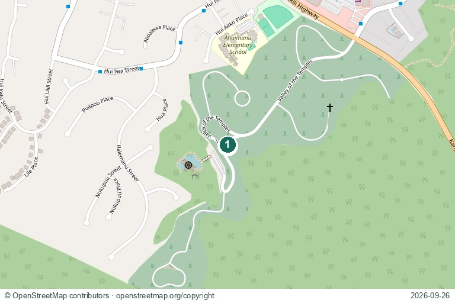
地図を開く ↗
墓所周辺の拡大図
張学良・趙一荻の墓所
墓所の位置を示す画像です。園内道路・駐車場所は管理事務所の案内を確認してください。
© OpenStreetMap contributors
この日の別案・調整条件を見る查看当天备选方案与调整条件
Sheraton Waikiki Beach ResortSheraton Waikiki Beach Resort 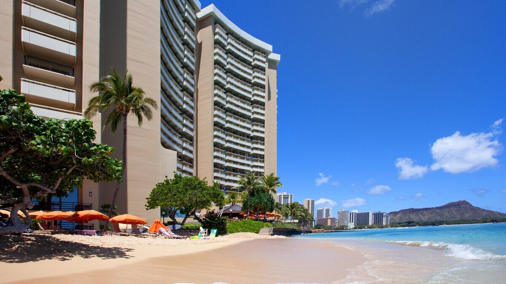
写真出典: Marriott公式ギャラリー（外観） 照片来源：Marriott官方画廊（外观） チェックイン 2026/10/7 15:00、チェックアウト 2026/10/8 11:00。1室・大人2名、滞在費総額はUSD 642.14 。予約保証はMastercard、税・手数料の内訳と取消条件は詳細控えで確認。今回の訂正画像にない確認番号・部屋タイプは旧画像から引き継がない。入住2026年10月7日15:00，退房2026年10月8日11:00。1间客房、2位成人，住宿总额USD 642.14 。信用卡担保为Mastercard，税费明细与取消条件需核对详细凭证。本次更正截图未显示确认号与房型，不沿用旧截图中的信息。
記載額：宿泊 USD 642.14 ＋ Avisレンタカー CNY 831（10/7–9分をここで計上、前払い表示・引落し未照合）。追加見込み：運転者 USD 26（税等別の参考額）、Bishop入場 USD 67.90–77.90＋駐車 USD 16＋荷物預かり USD 5/点、Sheratonセルフ駐車 USD 55/日（選択時）。Bishopの割引適用は購入時に確認。墓所・燃料・食事は未定。航空券は全体欄に計上済み。记录金额：住宿642.14美元＋Avis租车831元（10月7日至9日整段在本日计入，凭证显示预付，扣款待核对）。额外预计：驾驶员26美元（参考价，可能另加税）、Bishop门票67.90–77.90美元＋停车16美元＋寄存每件5美元，Sheraton自助停车55美元/日（如选择）。Bishop优惠在购票时核对；墓址、燃油、餐饮待定。机票已计入全程费用。
10/8 木曜日 / Pearl Harbor → North Shore 星期四 / Pearl Harbor → North Shore
レンタカーでPearl HarborとNorth Shore方面をまとめて回る日。朝Sheratonをチェックアウトし、The Twin Finに荷物を預けてからPearl Harborへ。Dole Plantationでパイナップルのアイスクリームを食べ、North Shoreの立ち寄りは絞ります。夕食はAla Moana Centerで簡単に済ませる予定です。租车集中游览Pearl Harbor和North Shore；早上从Sheraton退房并在The Twin Fin寄存行李后前往Pearl Harbor。在Dole Plantation吃菠萝冰淇淋，精选North Shore停留点；晚餐计划在Ala Moana Center简单解决。
この日の要点当天要点
朝の出発早间出发 07:00頃Sheraton退房 → Twin Finへ。荷物預かりは事前確認07:00左右Sheraton退房 → Twin Fin，提前确认寄存
予約・荷物预约与行李 USS Arizona参加なら開始1時間前着／通常のバッグは預ける参加USS Arizona时提前1小时到达／普通包袋须寄存
食事餐饮 Dole Whip予定、夕食はAla Moanaで簡単に。昼食は候補から選ぶ计划Dole Whip，晚餐在Ala Moana简单解决；午餐从候选中选择
駐車・短縮停车与删减 Pearl Harbor USD 7、USS Arizonaを予約する場合USD 2／ホテルバレー約USD 62.83（利用時）Pearl Harbor停车7美元，预订USS Arizona时手续费2美元／酒店代客泊车约62.83美元（如使用）
北海岸からの帰路北海岸返程 16:00までに出発 → Ala Moana 18:00目標。運転90分を超える予測なら早め、浜を省く16:00前出发 → 目标18:00到Ala Moana；预计车程超过90分钟时提前，取消海滩
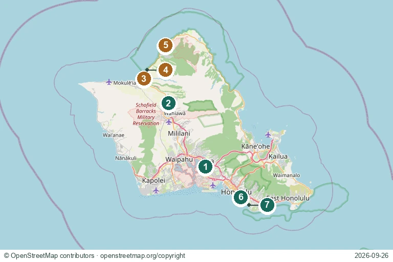
地図を開く ↗
Day 8 · Pearl HarborからNorth Shoreへ
Pearl Harbor Visitor Center Dole Plantation Haleiwa（街歩き・昼食候補） Laniakea Beach（候補） Sunset Beach（候補） Ala Moana Center：夕食 The Twin Fin
番号は地点の位置です。画像をタップすると地図が開きます。 茶色は時間や当日の状況で選ぶ候補。
© OpenStreetMap contributors
10/8 Pearl Harbor / North Shore Pearl Harbor / North Shore
07:00頃 Sheraton退房・The Twin Finへ荷物を預けるSheraton退房、前往The Twin Fin寄存行李 朝の荷物預かりをThe Twin Finへ事前確認し、スーツケースと通常のリュックを預ける。預かれない場合はPearl Harbor入口の有料預かりを利用し、受付時間を別に見込む。ワイキキからビジターセンターまでNPS目安で車約45分。予約プログラムに参加する場合は集合時刻から逆算して早める。提前向The Twin Fin确认早间寄存，将旅行箱与普通背包留下；若不接受寄存，使用Pearl Harbor入口的付费寄存，并另留办理时间。NPS估计从威基基到游客中心车程约45分钟；参加预约项目时按集合时刻倒推，必要时提早出发。
駐車：The Twin Fin（朝の荷物預け）
2570 Kalakaua Ave。荷物を預ける間の停車場所と短時間料金は、バレー係に確認 。夜間料金を朝の短時間停車へそのまま当てはめない。荷物預けの可否も事前確認。停車できない・荷物を預けられない場合はPearl Harborの有料預かり施設を使う案へ。地址2570 Kalakaua Ave。向代客泊车人员确认寄存行李时的允许临停地点与短时收费 ，不能直接将过夜价格套用在上午临停。提前确认能否寄存；无法临停或寄存时，改考虑Pearl Harbor入口的付费寄存设施。
08:30–11:00候補 Pearl Harbor ビジターセンターとNPSの展示は入場無料。車はビジターセンター公共駐車場へ（1 Arizona Memorial Place、USD 7/日、現地QRコード等で支払い）。USS Arizona記念館の船のプログラムは予約推奨、参加時は開始1時間前を目安に到着する。プログラムは無料だが、事前予約は1枚USD 1、2人でUSD 2の返金不可手数料がかかる。予約・支払いは未確認。游客中心及国家公园管理局展览免费。车辆停游客中心公共停车场（1 Arizona Memorial Place，每天7美元，现场扫码等方式支付）。USS Arizona纪念馆乘船项目建议预订；参加时以提前1小时抵达为目标。项目免费，但提前预订每张收取不可退手续费1美元，两人合计2美元；预订与付款尚未确认。
駐車：Pearl Harbor Visitor Center
1 Arizona Memorial Placeの公共駐車場、USD 7/日。 軍基地や別施設の駐車場へ向かわない。停めたらナンバーを確認し、現地掲示の公式QR/支払サイトの手順で支払う。予約参加なら駐車・精算・入口までの移動を含めて開始1時間前の到着を目標に。満車なら係員に案内を求める。通常のバッグはホテルか入口の預かり施設へ。1 Arizona Memorial Place公共停车场，每天7美元。 不要驶向军事基地或其他设施停车场。停车后确认车牌，按现场官方二维码或付款网页步骤支付；参加预约项目时，停车、付款及步行均应计入提前1小时抵达的目标。满位请询问工作人员；普通包袋留酒店或入口寄存。
バッグ・荷物預かり
普通のリュック・ハンドバッグ・カメラバッグ等は持ち込まない。 中身を隠せるバッグで1.25 × 2.25 × 5.5インチ（約3.2 × 5.7 × 14cm）を超えるものは禁止。透明バッグ、規定寸法以下の財布等には例外があり、入口で検査される。パスポート・薬・カード等の必需品は規定に合う持ち方にする。不要带普通背包、手提包或相机包入场。 能遮住内容物且超过1.25 × 2.25 × 5.5英寸（约3.2 × 5.7 × 14厘米）的包袋被禁止。透明包及不超规定尺寸的钱包等有例外，须入口安检；护照、药物、银行卡等按符合规定的方式携带。
預かりが必要な場合： ビジターセンター入口近くのPacific Fleet Submarine Museum運営の有料施設へ。スーツケースも対象で、サイズを問わず有料。現在の料金・受付時間・引取り条件を利用前に確認し、見学後に回収する。預かり可否が未確定のまま、全員が荷物を車に残して離れる行程にはしない。需要寄存时： 使用游客中心入口附近由Pacific Fleet Submarine Museum运营的付费寄存，旅行箱也可寄存，所有尺寸均收费。使用前确认价格、营业时间和取件条件，参观后取回；寄存未落实时，不安排全员离开装有行李的车。
11:00–12:00候補 K.Bay Bros TooでポケK.Bay Bros Too波奇午餐 4510 Salt Lake Blvd。Pearl Harborに近い昼食候補として、当日の営業を確認してから向かう。ここを選ぶ場合はNorth Shoreでの昼食を重ねない。地址4510 Salt Lake Blvd。作为Pearl Harbor附近午餐候选，确认当天营业后再前往；选择这里时不再在North Shore重复安排午餐。
駐車：K.Bay Bros Too
昼食の選択肢。 4510 Salt Lake Blvd。店舗利用者の指定駐車区画・料金・入口は公式情報で未確認 。店で確認してから停める。近隣の別店舗専用区画は使わず、条件を確認できなければ別の昼食候補へ。午餐候选。 地址4510 Salt Lake Blvd，顾客指定车位、收费与入口尚未由官方资料确认 ，停车前向店员询问。不要占用附近其他店铺专用位；无法确认则选其他午餐候选。
12:30頃候補 Dole Plantationでパイナップルアイス在Dole Plantation吃菠萝冰淇淋 64-1550 Kamehameha Hwy。Dole Whipを食べる立ち寄り。公式営業時間は09:30–17:30。列車・迷路・庭園ツアーは入れるときだけ別途チケット確認。地址64-1550 Kamehameha Hwy，此站计划吃Dole Whip菠萝软冰淇淋。官网营业时间09:30–17:30；只有决定参加小火车、迷宫或花园游览时再核对门票。
駐車：Dole Plantation
64-1550 Kamehameha Hwy。施設のVisitor Parking案内に従う。駐車料金・専用入口の詳細は公式に記載なし なので、入口表示で確認。Visitor Center入場は無料 、Dole Whipは商品代を払う。09:30–17:30営業。駐車待ちが長ければ有料アトラクションを追加せず、アイスだけの立ち寄りにする。地址64-1550 Kamehameha Hwy，按Visitor Parking指示进入。官网未列停车收费及专用入口详情 ，以入口标志确认。Visitor Center入场免费 ，Dole Whip另付商品费用；营业09:30–17:30。停车等候较长时，不加入收费游乐项目，只保留冰淇淋停留。
午後候補 Haleiwa town / Giovanni’s 昼食と街歩きを一体化。営業時間・列・駐車を確認し、全部を詰め込まない。将午餐和镇上散步合并；先确认营业时间、排队和停车，不强求全部完成。
駐車：Haleiwa / Giovanni’s
Giovanni’sのHaleiwa店は66-472 Kamehameha Hwy （Kahuku店と別）。その敷地の利用者向け駐車区画を入口で確認し、駐車料・支払方法は未確認 。街歩きもする場合は利用時間と他店へ歩く可否を確認する。満車なら立ち寄りを減らす。Haleiwa周辺の他店専用駐車場を街歩き用に使わない。Giovanni’s的Haleiwa店为66-472 Kamehameha Hwy ，不要误去Kahuku店。入场时确认该场地顾客车位；停车费与付款方式未确认 。若还要小镇散步，确认允许时长及能否离场逛其他店；满位时减少停留，不把其他店专用车场当作小镇公共停车场。
午後後半候補 Laniakea Beach / Sunset Beach 海況と帰路の交通を確認し、一方だけ短く立ち寄る候補。16:00までの北海岸出発を優先し、帰路の運転が90分を超える予測なら浜を省いて早く戻る。日没まで待つ行程にはしない。先看海况及返程交通，仅选一处短暂停留。优先保证16:00前离开北海岸；预计返程车程超过90分钟时取消海滩并提早返回，不安排等到日落。
駐車：Laniakea / Sunset Beach
海岸は1か所、合法な空き区画がある場合だけ。 Laniakeaには道路改良に伴う駐車場の出入口変更の告知があり、2024年の仮設図では2026年10月の入口を確定できない。現地の入口・駐車禁止・横断案内を優先し、料金も現地確認。路肩停車で代用しない 。Sunset Beachは公式観光案内に駐車場ありと記載、料金・個別ゲート条件は未確認。どちらも満車なら省き、North Shoreを16:00までに出発。海滩只选一处，并以有合法空位为前提。 Laniakea曾公告因道路改造调整停车入口，2024年临时图不能确定2026年10月入口；以现场入口、禁停及过街指示为准，收费现场确认。不以路肩停车代替 。官方旅游资料确认Sunset Beach有停车场，但收费与个别闸门条件未确认。两处均满位时取消海滩，16:00前离开North Shore。
16:00–18:00帰路目安 North Shore → Ala Moana Center北海岸 → Ala Moana Center 北海岸を16:00までに出発し、運転90分＋駐車・徒歩30分の計2時間を仮置きする。実測ではなく交通で変わる計画値。道路予測が長ければその分早め、海岸の立寄りを省く。16:00を過ぎたら追加の立寄りをせず夕食場所へ直行する。16:00前离开北海岸，暂留开车90分钟、停车及步行30分钟，共2小时。这是计划值，并非实测；路况预计更慢时相应提前并取消海滩。超过16:00则不再加景点，直接前往晚餐地点。
18:00–19:30目安 Ala Moana Centerで簡単な夕食在Ala Moana Center简单用晚餐 Makai Market Food CourtまたはLanaiのフードコートで当日選ぶ。センター公式は通常10:00–20:00、個別店舗は営業時間が異なる。北海岸からの帰路が遅い場合は時間を調整する。当天从Makai Market Food Court或Lanai美食区选择。商场官网通常营业10:00–20:00，个别店铺时间可能不同；从北海岸返回较晚时调整用餐时间。
駐車：Ala Moana Center
1450 Ala Moana Blvd。夕食は買い物・食事客向けの無料区画 へ。施設内にはPremium Parkingの有料区画もあり、有料・従業員・ホテル向けの表示を確認 。無料対象だからと有料区画に無条件で停めない。Makai Market / Lanaiへ歩く時間を含め、駐車・移動30分は計画に確保済み。通常のバレーはなし。地址1450 Ala Moana Blvd，晚餐使用购物或用餐顾客的免费车位 。场内也有Premium Parking收费区域，须确认收费、员工或酒店区域标志 ；不能因顾客免费就随意停收费区。停车与步行至Makai Market或Lanai的30分钟已计入计划。商场不提供常规代客泊车。
夕食後 The Twin Finへ戻る返回The Twin Fin チェックインし、翌日のHNL便とレンタカー返却条件を確認する。办理入住，并核对次日HNL航班与租车还车条件。
駐車：The Twin Fin（夜間）
宿泊者バレーUSD 60＋4.712%税＝約USD 62.83/泊 、出入庫可。セルフ駐車の案内は公式FAQにないため、このバレーを第一候補にする。予約への包含・空車と翌朝の取車方法を確認。07:45取車依頼 → 08:15出発 は待ち時間を含む計画値。料金はこの1泊分としてDay 8に計上し、翌朝に再加算しない。住客代客泊车60美元＋4.712%税＝约62.83美元/晚 ，允许多次出入。官网FAQ未列自助停车，暂以代客泊车为首选；确认订单是否包含、空位及次晨取车方式。07:45请取车 → 08:15出发 为含等候时间的计划值，费用计入第8天这一个住宿晚，不在次晨重复计算。
リゾート料は1室1日USD 56＋税 、CNY 1,694に含まれるか未確認。含まれない分だけ追加する。度假设施费每房每日56美元＋税 ，是否含在1,694元中尚未核对，只追加未包含部分。
宿泊確認とNorth Shore候補 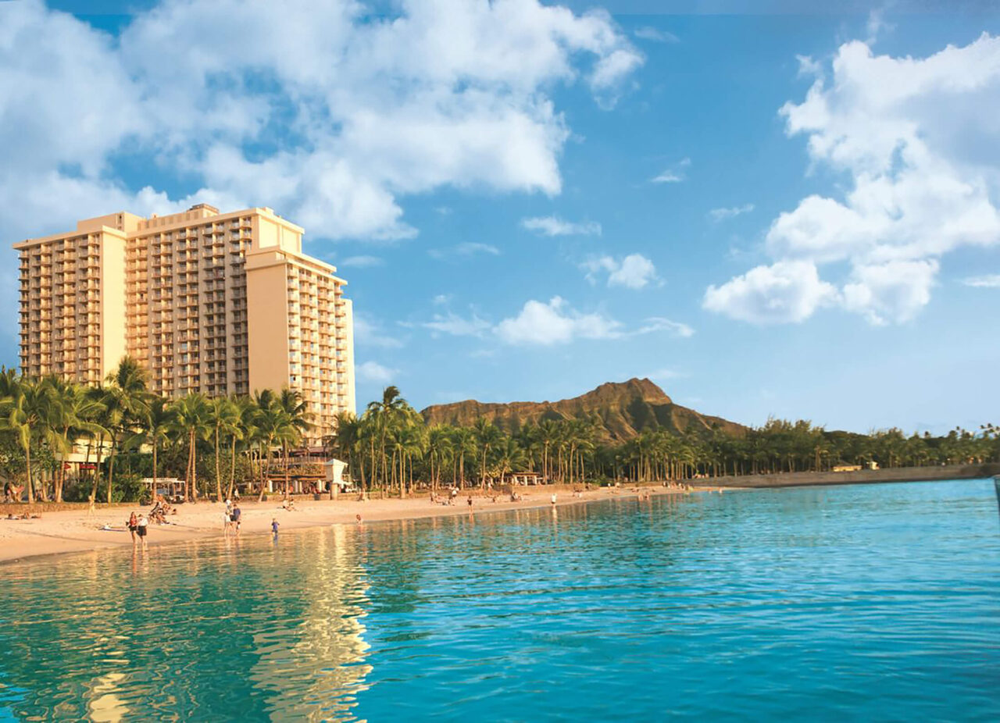
写真出典: The Twin Fin公式ギャラリー 照片来源：The Twin Fin官方画廊 The Twin Fin Hotel （10/8–10/9、CNY 1,694、返金不可）。ホテル朝食なし。Pearl Harbor、Dole Plantation、Haleiwa、Giovanni’s Shrimp Truck、Laniakea Beach、Sunset Beachを保持し、USS Arizonaの枠、Dole有料アクティビティ、営業時間、駐車、野生動物への配慮、帰路渋滞を確認する。
この日の別案・調整条件を見る查看当天备选方案与调整条件
記載額：宿泊 The Twin Fin CNY 1,694 ＋ Pearl Harbor駐車 USD 7。USS Arizonaを2枚事前予約する場合、手数料USD 2を別途計上（予約・支払い未確認）。ホテルバレー利用時は約USD 62.83/泊、リゾート料 USD 56＋税は宿泊表示額に含まれない場合のみ追加。Oahuレンタカー CNY 831はDay 7・全体欄に計上済み。燃料・食事・Dole Whip・荷物預かり・任意施設・窓口追加精算は未定。记录金额：The Twin Fin住宿1,694元＋Pearl Harbor停车7美元。若提前预订两张USS Arizona票，另列手续费2美元（预订与付款尚未确认）。酒店代客泊车如使用，约62.83美元/晚；度假设施费56美元＋税仅在未包含于住宿显示价时追加。瓦胡岛租车831元已在第7天及全程清单计入。燃油、餐饮、Dole Whip、寄存、自选景点及柜台追加结算待定。
10/9 金曜日 / Honolulu → 機内泊 星期五 / 檀香山出发 → 机上过夜
The Twin Finをチェックアウトし、HNLでレンタカーを返却してJL073に搭乗。ホノルル10/9昼に出発し、羽田には翌10/10午後に着きます。从The Twin Fin退房，在HNL还车后搭乘JL073。10月9日中午从檀香山出发，次日10月10日下午抵达羽田。
この日の要点当天要点
ホテル出発离开酒店 07:45取車依頼 → 08:15出発目安。給油と朝の交通を見込む参考07:45请取车 → 08:15出发，计入加油与早间交通
返車・空港还车与机场 09:30 Avis返却、CONRAC 4階 → T2・Lobby 5（JAL）09:45–10:00目標09:30 Avis还车，CONRAC四楼 → 目标09:45–10:00到T2・Lobby 5（JAL）
フライト航班 JL073 12:15 HNL発 → 翌10/10 15:55 HND着JL073 12:15 HNL起飞 → 次日10月10日15:55到HND
費用费用 レンタカーはDay 7、前夜の駐車はDay 8計上。再加算しない租车计入第7天、前晚停车计入第8天，不重复计算
東京1泊の荷物东京一晚的行李 HNLで通し預け先・羽田受取の可否を確認。1泊分は機内持込へ在HNL确认托运目的地及羽田取件可否；一晚用品放随身行李 10/9 Fri JL073 / Japan Airlines
12:15 HNL T2 10/9発10月9日出发
15:55 HND T3 10/10着10月10日抵达
2人分のeチケット発券済み。飛行約8時間40分。時差により羽田到着は翌日。手荷物・チェックイン締切・運航状況を出発前に確認。两人电子客票已出票，飞行约8小时40分钟；因时差次日抵达羽田。出发前确认行李、值机截止时间与航班动态。
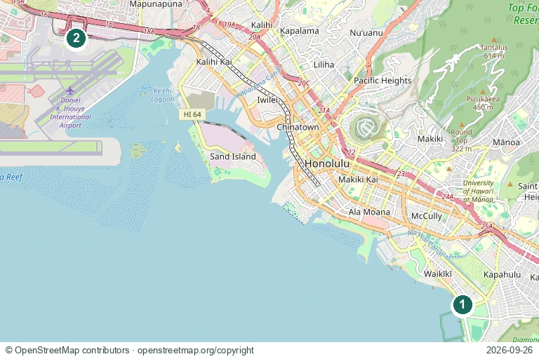
地図を開く ↗
Day 9 · ホテルからHNLの返却施設へ
The Twin Fin：ホテル出発 HNL CONRAC：Avis返却 → T2へ
2はCONRACの建物位置です。返却入口は「Rental Car Return」の標識に従い、Avisの4階返却レーンへ。
© OpenStreetMap contributors
10/9 Waikiki → HNL T2 → Haneda 威基基 → HNL T2 → 羽田
07:45頃目安 チェックアウト・バレーの車を依頼退房、请代客泊车取车 ホテル駐車を利用した場合は、08:15出発に向け07:45頃に取車を依頼 する計画。待ち時間30分を仮置きし、前夜に朝の待ち時間・精算手順を確認。追加料金がある場合は宿泊明細へまとめる。若使用酒店代客泊车，计划07:45左右请工作人员取车，以08:15出发为目标 。暂留30分钟等待，前夜确认早间等候与结算手续；如有追加收费，核对住宿账单。
前夜のホテル駐車費はDay 8と同じ1泊分として精算し、ここで再加算しない。前晚酒店停车仍计入第8天同一晚费用，在此结算时不重复计算。
08:15頃目安 The Twin Finを出発离开The Twin Fin Avisの返却先300 Rodgers Blvdへ。09:30の予約返却時刻から逆算し、給油と朝の交通を見込んで08:15頃にホテルを出る。Avis还车地点为300 Rodgers Blvd，预订还车时间09:30；考虑加油与清晨交通，计划08:15左右离开酒店。
09:30返却 → 09:45–10:00 T2目標 HNL CONRACのAvisへ返却 → T2HNL CONRAC Avis还车 → T2 「Rental Car Return」の標識からCONRACへ入り、Avisの4階返却レーンへ。 地図は建物位置（21.3331707, -157.9169946）で、車両入口は現地案内に従う。返却記録を受け取り、忘れ物を確認してから、徒歩または無料送迎でT2・Lobby 5（JAL）へ15–30分を計画値として確保する。ロビー・窓口は当日の空港表示に従う。JL073は12:15発。按“Rental Car Return”指示进入CONRAC，前往Avis四楼还车车道。 地图标示建筑位置（21.3331707, -157.9169946），车辆入口按现场指示。取得还车凭证并检查遗留物后，暂留15–30分钟步行或免费接驳至T2・Lobby 5（JAL）；大厅与柜台位置按当天机场指示。JL073于12:15起飞。
返却レーンへ進入
一般の旅客駐車場へは入らず、Avisの返却レーンへ直接向かう。不驶入普通旅客停车场，直接前往Avis还车车道。
T2到着後 T2・Lobby 5でJALチェックイン・荷物タグの最終目的地を確認在T2・Lobby 5办理JAL值机、确认行李标签最终目的地 航空券はHNL → HND → PEKに「Baggage checked through」（通し預け）と記載。東京で一泊することを係員へ伝え、タグの目的地がPEKかHNDか、羽田で受け取りたい場合の可否、翌朝の再預けの要否を確認する。北京まで通し預けなら東京で荷物を使えない前提にし、衣類・洗面具・薬など1泊分を機内持込へ分ける。机票对HNL → HND → PEK标示“Baggage checked through”（直挂）。告知工作人员将在东京住一晚，确认标签目的地是PEK还是HND、能否在羽田取行李，以及次晨是否需重新托运。若直挂北京，应按东京无法使用托运行李准备，将衣物、洗漱品、药品等一晚用品放入随身行李。
12:15 JL073 HNL T2を出発JL073从HNL T2出发 日本への夜間飛行。到着日は10/10。夜间飞往日本，抵达日期为10月10日。
返却前の確認还车前核对 Avisは10/7 09:30受取 → 10/9 09:30返却、HNLのCONRAC（300 Rodgers Blvd）。Toyota Corollaまたは同等クラス（ICAR、AT、5席）、走行距離無制限。オンライン前払い表示はCNY 831だがカード引落し未照合。追加運転者1人は窓口払いUSD 26の参考額（税等別の可能性）。返却後は無料送迎バスでT2へ、または空港案内に従い徒歩で移動する。Avis于10月7日09:30取车、10月9日09:30还车，地点均为HNL CONRAC（300 Rodgers Blvd）。Toyota Corolla或同级（ICAR、自动挡、5座），不限里程。凭证显示线上预付831元，实际扣款待核对；一名额外驾驶员到店支付参考价26美元，可能另有税费。还车后乘免费接驳巴士前往T2，或按机场指示步行。
航空券は全体欄に計上済み。Oahuレンタカー CNY 831はDay 7・全体欄、10/8泊のホテル駐車はDay 8に計上し、再加算しない。追加の燃料・朝食・空港飲食・窓口精算は未定。机票已计入全程费用。瓦胡岛租车831元已在第7天及全程清单计入，10月8日一晚的酒店停车计入第8天，不重复相加。额外燃油、早餐、机场餐饮及柜台结算待定。
10/10 土曜日 / 羽田到着 → 東京1泊 星期六 / 抵达羽田 → 东京一晚
JL073で羽田T3に15:55到着。入国手続き後に東京で1泊し、夕方から買い物・食事・居酒屋を近場で楽しみます。預け荷物を羽田で受け取るかはHNLでの確認結果に従います。温泉は時間が残る場合の候補です。宿泊先は未確定です。搭JL073于15:55抵达羽田T3。入境后在东京住一晚，傍晚就近购物、用餐或去居酒屋；是否在羽田取托运行李按HNL确认结果办理；温泉只作有余暇时的候选。酒店尚未确定。
この日の要点当天要点
到着抵达 JL073でHND T3 15:55着、入国後ホテルへ。荷物受取はHNLでの案内に従うJL073于15:55抵达HND T3，入境后去酒店；托运行李按HNL指示办理
宿泊住宿 東京1泊は未確定。翌朝HNDへ短く移動できる宿を選ぶ东京一晚未定，选择次晨前往HND较便捷的酒店
夕方の候補傍晚候选 食事・買い物は宿の近く、温泉は時間が残る場合のみ餐饮与购物在酒店附近，仅有时间时考虑温泉
翌朝次晨 JL021 08:50発／HND T3 06:50着を暫定目標JL021 08:50起飞／暂以06:50到HND T3为目标 10/9発 → 10/10着 JL073 / Japan Airlines
10/9 12:15 HNL T2 前日10/9発前一天10月9日出发
10/10 15:55 HND T3 10/10着10月10日抵达
時刻は各空港の現地時刻。10/9発の同一便を到着日にも表示。翌10/11のJL021は羽田T3を08:50に出発する。时刻均为各机场当地时间。此处按抵达日期再次显示10月9日出发的同一航班；次日JL021于08:50从羽田T3出发。
10/10 Haneda arrival / Tokyo night 抵达羽田 / 东京过夜
15:55 羽田HND T3に到着抵达羽田HND T3 入国・税関手続きを経て、翌朝の空港移動が短い宿へ向かう。預け荷物は、HNLで羽田受取と案内された場合だけ受け取り、北京まで通し預けの場合は係員の指示に従う。办理入境及海关手续后，前往便于次晨到机场的酒店。仅在HNL已告知羽田取件时领取托运行李；若直挂北京，按工作人员指示办理。
夕方〜夜 東京で食事・買い物（未決定）在东京吃饭与购物（尚未决定） 居酒屋は宿から戻りやすい範囲で検討。温泉は移動時間と休息が残る場合だけ加える。翌朝は早いため無理に詰め込まない。居酒屋选择方便回酒店的区域；仅在交通与休息时间充裕时考虑温泉。次晨需早起，不排得太满。
東京1泊の荷物东京一晚的行李安排 航空券は通し預けを表示しているため、羽田での荷物受取を前提にしない。10/9のHNLチェックイン時に東京1泊を伝え、荷物タグと係員の案内で最終確認する。机票标示行李直挂，不预设在羽田取件。10月9日在HNL值机时告知东京住一晚，以行李标签及工作人员说明作最终确认。
PEKまで通し預けと案内された場合： JALの一般案内では同一空港の国際線乗継で受取不要。東京1泊に使う衣類・洗面具・薬は機内持込に用意する。若告知直挂PEK： JAL一般说明同机场国际转国际无需领取托运行李；东京一晚的衣物、洗漱品及药品应放随身行李。HNDで受け取るよう案内された場合： 税関前に荷物を受け取り、翌朝JL021での再預けを確認する。東京での買い物で預け荷物が増える場合も、許容量・追加料金を確認する。若告知在HND取件： 在海关前取行李，确认次晨JL021重新托运。东京购物新增托运行李时，也要确认额度及追加费用。実際の羽田受取可否は未確認。液体・電池等は利用便の機内持込条件に合わせる。实际能否在羽田取件尚未确认；液体、电池等按所搭航班随身携带规定准备。
東京の宿は未確定东京酒店尚未确定 10/10–11の1泊。HND T3へ翌朝06:50頃に着ける場所を優先し、予約後に料金・移動方法・所要時間を追加する。10月10日至11日一晚。优先选择次晨约06:50可抵达HND T3的住宿；预订后补充价格、交通方式及时间。
航空券は全体欄に計上済み。東京の宿泊・交通・食事・買い物・温泉は金額未定。机票已计入全程费用；东京住宿、交通、餐饮、购物与温泉金额待定。
10/11 日曜日 / 羽田 → 北京 星期日 / 羽田 → 北京
東京のホテルから羽田T3へ移動し、JL021で北京首都T3へ。10/11 12:00到着予定です。从东京酒店前往羽田T3，乘JL021飞往北京首都机场T3，计划10月11日12:00抵达。
この日の要点当天要点
ホテル出発离开酒店 宿が決まり次第、交通から逆算。HND T3 06:50着目標酒店确定后按交通倒推，目标06:50到HND T3
フライト航班 JL021 08:50 HND T3発 → 12:00 PEK T3着JL021 08:50 HND T3起飞 → 12:00到PEK T3
荷物行李 HNLでの案内に従う。羽田受取なら再預け、北京通し預けなら追加荷物だけ確認按HNL说明办理；羽田取件则重新托运，直挂北京则确认新增行李
到着後抵达后 北京での空港からの移動は未記録北京机场后的交通尚未记录 10/11 Sun JL021 / Japan Airlines
08:50 HND T3 羽田発羽田出发
12:00 PEK T3 北京着抵达北京
2人分のeチケット発券済み。飛行約4時間10分。出発前に手荷物・運航状況を確認する。两人电子客票已出票，飞行约4小时10分钟。出发前确认行李规定与航班动态。
10/11 Tokyo → Beijing 东京 → 北京
06:50頃目標 羽田T3到着・出国手続き抵达羽田T3并办理出境 08:50発の約2時間前を暫定目標にする。宿が決まったらホテル出発時刻を移動手段から逆算する。羽田で受け取った預け荷物は再預けが必要。北京まで通し預けと確認した荷物は原則そのまま乗継となり、東京で増えた荷物の扱いはJALへ確認する。暂以08:50起飞前约2小时到达为目标；酒店确定后按交通方式倒推出发时刻。在羽田已领取的托运行李需重新托运；确认直挂北京的行李原则上继续转运，东京新增行李的处理向JAL确认。
08:50 → 12:00 JL021 羽田T3 → 北京首都T3JL021 羽田T3 → 北京首都T3 両時刻は各空港の現地時刻。北京到着後の移動は未記録。两端均为当地时间；抵达北京后的交通尚未记录。
航空券は全体欄に計上済み。東京から羽田までと北京到着後の交通・食事は金額未定。机票已计入全程费用；东京至羽田及抵达北京后的交通、餐饮金额待定。